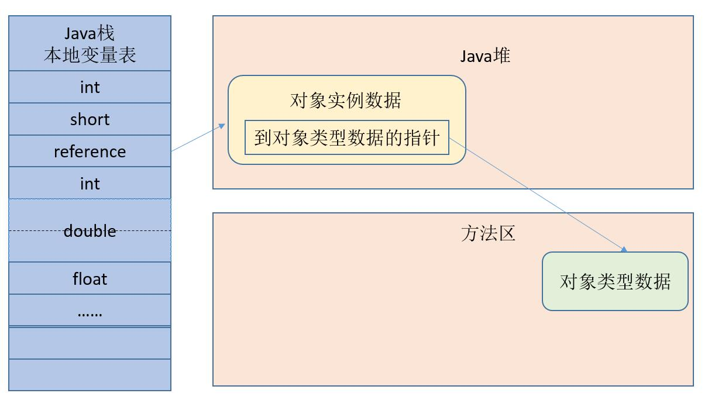

<!DOCTYPE html>
<html lang="en">
<head><meta name="generator" content="Hexo 3.9.0">
    <meta charset="utf-8">
    
    <title>
        堆中对象分配&amp;布局&amp;访问 |
        
        YingLong</title>
    
    
        <meta name="keywords" content="JVM">
    
    <meta name="viewport" content="width=device-width, initial-scale=1, maximum-scale=1">
    <meta name="description" content="Java与C++之间有一堵由内存动态分配和垃圾收集技术所围成的“高墙”，墙外面的人想进去，墙里面的人想出来。 对象的创建Java中创建对象（例如克隆、反序列化）通常仅仅是一个new关键字。当虚拟机遇到一条new指令时，首先将去检查这个指令的参数是否能在运行时常量池中定位到一个类的符号引用，并检查这个符号引用代表的类是否已被加载、解析、和初始化过。如果没有必须先执行相应的类加载过程。 在类加载检查通">
<meta name="keywords" content="JVM">
<meta property="og:type" content="article">
<meta property="og:title" content="堆中对象分配&amp;布局&amp;访问">
<meta property="og:url" content="https://yaoyinglong.github.io/Blog/Java/VM/堆中对象分配&布局&访问/index.html">
<meta property="og:site_name" content="YingLong">
<meta property="og:description" content="Java与C++之间有一堵由内存动态分配和垃圾收集技术所围成的“高墙”，墙外面的人想进去，墙里面的人想出来。 对象的创建Java中创建对象（例如克隆、反序列化）通常仅仅是一个new关键字。当虚拟机遇到一条new指令时，首先将去检查这个指令的参数是否能在运行时常量池中定位到一个类的符号引用，并检查这个符号引用代表的类是否已被加载、解析、和初始化过。如果没有必须先执行相应的类加载过程。 在类加载检查通">
<meta property="og:locale" content="en">
<meta property="og:image" content="https://yaoyinglong.github.io/images/JVM/对象头.png">
<meta property="og:image" content="https://yaoyinglong.github.io/images/通过句柄访问对象.png">
<meta property="og:image" content="https://yaoyinglong.github.io/images/通过直接指针访问对象.png">
<meta property="og:image" content="https://yaoyinglong.github.io/images/JVM/对象内存分配流程.png">
<meta property="og:image" content="https://yaoyinglong.github.io/images/JVM/老年代空间分匹配担保机制.png">
<meta property="og:updated_time" content="2022-02-22T11:00:46.495Z">
<meta name="twitter:card" content="summary">
<meta name="twitter:title" content="堆中对象分配&amp;布局&amp;访问">
<meta name="twitter:description" content="Java与C++之间有一堵由内存动态分配和垃圾收集技术所围成的“高墙”，墙外面的人想进去，墙里面的人想出来。 对象的创建Java中创建对象（例如克隆、反序列化）通常仅仅是一个new关键字。当虚拟机遇到一条new指令时，首先将去检查这个指令的参数是否能在运行时常量池中定位到一个类的符号引用，并检查这个符号引用代表的类是否已被加载、解析、和初始化过。如果没有必须先执行相应的类加载过程。 在类加载检查通">
<meta name="twitter:image" content="https://yaoyinglong.github.io/images/JVM/对象头.png">
    

    

    
        <link rel="icon" href="/favicon.ico">
    

    <link rel="stylesheet" href="/libs/font-awesome/css/font-awesome.min.css">
    <link rel="stylesheet" href="/libs/open-sans/styles.css">
    <link rel="stylesheet" href="/libs/source-code-pro/styles.css">

    <link rel="stylesheet" href="/css/style.css">
    <script src="/libs/jquery/2.1.3/jquery.min.js"></script>
    <script src="/libs/jquery/plugins/cookie/1.4.1/jquery.cookie.js"></script>
    
    
        <link rel="stylesheet" href="/libs/lightgallery/css/lightgallery.min.css">
    
    
        <link rel="stylesheet" href="/libs/justified-gallery/justifiedGallery.min.css">
    
    
    
    


</head>
</html>
<body>
<div id="container">
    <header id="header">
    <div id="header-main" class="header-inner">
        <div class="outer">
            <a href="/" id="logo">
                <i class="logo"></i>
                <span class="site-title">YingLong</span>
            </a>
            <nav id="main-nav">
                
                    <a class="main-nav-link" href="/">Home</a>
                
                    <a class="main-nav-link" href="/archives">Archives</a>
                
                    <a class="main-nav-link" href="/categories">Categories</a>
                
                    <a class="main-nav-link" href="/tags">Tags</a>
                
                    <a class="main-nav-link" href="/about">About</a>
                
                <a class="main-nav-link" href="javascript:trigger()">Reading</a>
            </nav>
            
            <div id="search-form-wrap">
    
        <form class="search-form">
            <input type="text" class="ins-search-input search-form-input" placeholder="Search">
            <button type="submit" class="search-form-submit"></button>
        </form>
        <div class="ins-search">
    <div class="ins-search-mask"></div>
    <div class="ins-search-container">
        <div class="ins-input-wrapper">
            <input type="text" class="ins-search-input" placeholder="Type something...">
            <span class="ins-close ins-selectable"><i class="fa fa-times-circle"></i></span>
        </div>
        <div class="ins-section-wrapper">
            <div class="ins-section-container"></div>
        </div>
    </div>
</div>
<script>
    (function (window) {
        var INSIGHT_CONFIG = {
            TRANSLATION: {
                POSTS: 'Posts',
                PAGES: 'Pages',
                CATEGORIES: 'Categories',
                TAGS: 'Tags',
                UNTITLED: '(Untitled)',
            },
            ROOT_URL: '/',
            CONTENT_URL: '/content.json',
        };
        window.INSIGHT_CONFIG = INSIGHT_CONFIG;
    })(window);
</script>
<script src="/js/insight.js"></script>
    
</div>
        </div>
    </div>
    <div id="main-nav-mobile" class="header-sub header-inner">
        <table class="menu outer">
            <tr>
                
                    <td><a class="main-nav-link" href="/">Home</a></td>
                
                    <td><a class="main-nav-link" href="/archives">Archives</a></td>
                
                    <td><a class="main-nav-link" href="/categories">Categories</a></td>
                
                    <td><a class="main-nav-link" href="/tags">Tags</a></td>
                
                    <td><a class="main-nav-link" href="/about">About</a></td>
                
                <td>
                    
    <div class="search-form">
        <input type="text" class="ins-search-input search-form-input" placeholder="Search">
    </div>

                </td>
            </tr>
        </table>
    </div>
</header>
<script type="text/javascript">
    var index = 0
    trigger = function () {
        if (index % 2 == 0) {
            $("#sidebar").css("display", "none");
            $("#main").css("float", "none");
        } else {
            $("#sidebar").css("display", "inline");
            $("#main").css("float", "left");
        }
        index++
    }
</script>

    <div class="outer">
        
        
            <aside id="sidebar">
    
        
    <div class="widget-wrap" id="categories">
        <h3 class="widget-title">
            <span>categories</span>
            &nbsp;
            <a id="allExpand" href="#">
                <i class="fa fa-angle-double-down fa-2x"></i>
            </a>
        </h3>

        
        
        
            <ul class="unstyled" id="tree">
                
                    <li class="directory">
                        <a href="#" data-role="directory">
                            <i class="fa fa-folder"></i>
                            &nbsp;
                            Cloud
                        </a>
                        
            <ul class="unstyled" id="tree">
                
                    <li class="directory">
                        <a href="#" data-role="directory">
                            <i class="fa fa-folder"></i>
                            &nbsp;
                            Dubbo
                        </a>
                        
            <ul class="unstyled" id="tree">
                
                    <li class="file"><a href="/Blog/Cloud/Dubbo/Dubbo基础/">Dubbo基础</a></li>
                
                    <li class="file"><a href="/Blog/Cloud/Dubbo/Dubbo服务调用/">Dubbo服务调用</a></li>
                
                    <li class="file"><a href="/Blog/Cloud/Dubbo/SPI机制源码/">SPI机制源码</a></li>
                
                    <li class="file"><a href="/Blog/Cloud/Dubbo/Dubbo服务引入/">Dubbo服务引入</a></li>
                
                    <li class="file"><a href="/Blog/Cloud/Dubbo/Dubbo服务导出/">Dubbo服务导出</a></li>
                
                    <li class="file"><a href="/Blog/Cloud/Dubbo/Dubbo与Spring集成原理/">Dubbo与Spring集成原理</a></li>
                
            </ul>
        
                    </li>
                
                    <li class="directory">
                        <a href="#" data-role="directory">
                            <i class="fa fa-folder"></i>
                            &nbsp;
                            ELK
                        </a>
                        
            <ul class="unstyled" id="tree">
                
                    <li class="file"><a href="/Blog/Cloud/ELK/ElasticSearch基础/">ElasticSearch基础</a></li>
                
                    <li class="file"><a href="/Blog/Cloud/ELK/ElasticSearch实战/">ElasticSearch实战</a></li>
                
                    <li class="file"><a href="/Blog/Cloud/ELK/ElasticSearch进阶/">ElasticSearch进阶</a></li>
                
            </ul>
        
                    </li>
                
                    <li class="directory">
                        <a href="#" data-role="directory">
                            <i class="fa fa-folder"></i>
                            &nbsp;
                            MQ
                        </a>
                        
            <ul class="unstyled" id="tree">
                
                    <li class="file"><a href="/Blog/Cloud/MQ/Kafka基础/">Kafka基础</a></li>
                
                    <li class="file"><a href="/Blog/Cloud/MQ/RabbitMQ高级特性及Spring集成/">RabbitMQ高级特性及Spring集成</a></li>
                
                    <li class="file"><a href="/Blog/Cloud/MQ/RabbitMQ基础/">RabbitMQ基础</a></li>
                
                    <li class="file"><a href="/Blog/Cloud/MQ/RocketMQ消息存储源码/">RocketMQ消息存储源码</a></li>
                
                    <li class="file"><a href="/Blog/Cloud/MQ/RocketMQ高级特性/">RocketMQ高级特性</a></li>
                
                    <li class="file"><a href="/Blog/Cloud/MQ/RocketMQ基础/">RocketMQ基础</a></li>
                
                    <li class="file"><a href="/Blog/Cloud/MQ/RocketMQ消费者源码/">RocketMQ消费者源码</a></li>
                
                    <li class="file"><a href="/Blog/Cloud/MQ/RocketMQ生产者源码/">RocketMQ生产者源码</a></li>
                
            </ul>
        
                    </li>
                
                    <li class="directory">
                        <a href="#" data-role="directory">
                            <i class="fa fa-folder"></i>
                            &nbsp;
                            Nacos
                        </a>
                        
            <ul class="unstyled" id="tree">
                
                    <li class="file"><a href="/Blog/Cloud/Nacos/Nacos Client原理/">Nacos Client原理</a></li>
                
                    <li class="file"><a href="/Blog/Cloud/Nacos/Nacos Server原理/">Nacos Server原理</a></li>
                
                    <li class="file"><a href="/Blog/Cloud/Nacos/Nacos问题总结/">Nacos问题总结</a></li>
                
                    <li class="file"><a href="/Blog/Cloud/Nacos/Nacos集群CP模式/">Nacos集群CP模式</a></li>
                
                    <li class="file"><a href="/Blog/Cloud/Nacos/Nacos配置中心Server原理/">Nacos配置中心Server原理</a></li>
                
                    <li class="file"><a href="/Blog/Cloud/Nacos/Nacos集群成员信息同步/">Nacos集群成员信息同步</a></li>
                
                    <li class="file"><a href="/Blog/Cloud/Nacos/Nacos集群注册服务同步/">Nacos集群注册服务同步</a></li>
                
                    <li class="file"><a href="/Blog/Cloud/Nacos/Nacos配置中心Client原理/">Nacos配置中心Client原理</a></li>
                
            </ul>
        
                    </li>
                
                    <li class="directory">
                        <a href="#" data-role="directory">
                            <i class="fa fa-folder"></i>
                            &nbsp;
                            Netty
                        </a>
                        
            <ul class="unstyled" id="tree">
                
                    <li class="file"><a href="/Blog/Cloud/Netty/IO模型基础/">IO模型基础</a></li>
                
                    <li class="file"><a href="/Blog/Cloud/Netty/Netty基础/">Netty基础</a></li>
                
                    <li class="file"><a href="/Blog/Cloud/Netty/Netty源码/">Netty源码</a></li>
                
                    <li class="file"><a href="/Blog/Cloud/Netty/Netty进阶/">Netty进阶</a></li>
                
            </ul>
        
                    </li>
                
                    <li class="directory">
                        <a href="#" data-role="directory">
                            <i class="fa fa-folder"></i>
                            &nbsp;
                            Redis
                        </a>
                        
            <ul class="unstyled" id="tree">
                
                    <li class="file"><a href="/Blog/Cloud/Redis/Redis分布式锁实现/">Redis分布式锁实现</a></li>
                
                    <li class="file"><a href="/Blog/Cloud/Redis/Redis缓存及性能优化/">Redis缓存及性能优化</a></li>
                
                    <li class="file"><a href="/Blog/Cloud/Redis/Redis基础/">Redis基础</a></li>
                
                    <li class="file"><a href="/Blog/Cloud/Redis/Redis集群架构/">Redis集群架构</a></li>
                
            </ul>
        
                    </li>
                
                    <li class="directory">
                        <a href="#" data-role="directory">
                            <i class="fa fa-folder"></i>
                            &nbsp;
                            Seata
                        </a>
                        
            <ul class="unstyled" id="tree">
                
                    <li class="file"><a href="/Blog/Cloud/Seata/Seata集成原理/">Seata集成原理</a></li>
                
                    <li class="file"><a href="/Blog/Cloud/Seata/Seata分布式事务原理/">Seata分布式事务原理</a></li>
                
            </ul>
        
                    </li>
                
                    <li class="directory">
                        <a href="#" data-role="directory">
                            <i class="fa fa-folder"></i>
                            &nbsp;
                            Sentinel
                        </a>
                        
            <ul class="unstyled" id="tree">
                
                    <li class="file"><a href="/Blog/Cloud/Sentinel/Sentinel配置持久化/">Sentinel配置持久化</a></li>
                
                    <li class="file"><a href="/Blog/Cloud/Sentinel/Sentinel规则发布源码/">Sentinel规则发布源码</a></li>
                
                    <li class="file"><a href="/Blog/Cloud/Sentinel/常见限流算法/">常见限流算法</a></li>
                
                    <li class="file"><a href="/Blog/Cloud/Sentinel/Sentinel限流熔断降级源码/">Sentinel限流熔断降级源码</a></li>
                
            </ul>
        
                    </li>
                
                    <li class="directory">
                        <a href="#" data-role="directory">
                            <i class="fa fa-folder"></i>
                            &nbsp;
                            Zookeeper
                        </a>
                        
            <ul class="unstyled" id="tree">
                
                    <li class="file"><a href="/Blog/Cloud/Zookeeper/Zookeeper基础/">Zookeeper基础</a></li>
                
                    <li class="file"><a href="/Blog/Cloud/Zookeeper/Zookeeper客户端之ZAB/">Zookeeper客户端之ZAB</a></li>
                
                    <li class="file"><a href="/Blog/Cloud/Zookeeper/Zookeeper集群Leader选举/">Zookeeper集群Leader选举</a></li>
                
                    <li class="file"><a href="/Blog/Cloud/Zookeeper/Zookeeper服务端之ZAB/">Zookeeper服务端之ZAB</a></li>
                
            </ul>
        
                    </li>
                
                    <li class="directory">
                        <a href="#" data-role="directory">
                            <i class="fa fa-folder"></i>
                            &nbsp;
                            网关
                        </a>
                        
            <ul class="unstyled" id="tree">
                
                    <li class="file"><a href="/Blog/Cloud/网关/Gateway源码/">Gateway源码</a></li>
                
            </ul>
        
                    </li>
                
                    <li class="file"><a href="/Blog/Cloud/Feign集成原理/">Feign集成原理</a></li>
                
                    <li class="file"><a href="/Blog/Cloud/Canal基础/">Canal基础</a></li>
                
                    <li class="file"><a href="/Blog/Cloud/Ribbon集成原理/">Ribbon集成原理</a></li>
                
                    <li class="file"><a href="/Blog/Cloud/分布式事务解决方案/">分布式事务解决方案</a></li>
                
                    <li class="file"><a href="/Blog/Cloud/分布式系统常见问题/">分布式系统常见问题</a></li>
                
                    <li class="file"><a href="/Blog/Cloud/秒杀问题及解决方案/">秒杀问题及解决方案</a></li>
                
            </ul>
        
                    </li>
                
                    <li class="directory">
                        <a href="#" data-role="directory">
                            <i class="fa fa-folder"></i>
                            &nbsp;
                            DB
                        </a>
                        
            <ul class="unstyled" id="tree">
                
                    <li class="file"><a href="/Blog/DB/Explain工具/">Explain工具</a></li>
                
                    <li class="file"><a href="/Blog/DB/MongoDB基础/">MongoDB基础</a></li>
                
                    <li class="file"><a href="/Blog/DB/MVCC与BufferPool缓存机制/">MVCC与BufferPool缓存机制</a></li>
                
                    <li class="file"><a href="/Blog/DB/MySQL主从架构/">MySQL主从架构</a></li>
                
                    <li class="file"><a href="/Blog/DB/MySQL事务隔离级别与锁机制/">MySQL事务隔离级别与锁机制</a></li>
                
                    <li class="file"><a href="/Blog/DB/MySQL内部组件结构/">MySQL内部组件结构</a></li>
                
                    <li class="file"><a href="/Blog/DB/MySQL基础/">MySQL基础</a></li>
                
                    <li class="file"><a href="/Blog/DB/MySQL常用SQL总结/">MySQL常用SQL总结</a></li>
                
                    <li class="file"><a href="/Blog/DB/ShardingSphere基础/">ShardingSphere基础</a></li>
                
                    <li class="file"><a href="/Blog/DB/分库分表/">分库分表</a></li>
                
                    <li class="file"><a href="/Blog/DB/索引优化一/">索引优化一</a></li>
                
                    <li class="file"><a href="/Blog/DB/索引优化三/">索引优化三</a></li>
                
                    <li class="file"><a href="/Blog/DB/索引优化二/">索引优化二</a></li>
                
                    <li class="file"><a href="/Blog/DB/索引的原理与使用/">索引的原理与使用</a></li>
                
            </ul>
        
                    </li>
                
                    <li class="directory open">
                        <a href="#" data-role="directory">
                            <i class="fa fa-folder-open"></i>
                            &nbsp;
                            Java
                        </a>
                        
            <ul class="unstyled" id="tree">
                
                    <li class="directory open">
                        <a href="#" data-role="directory">
                            <i class="fa fa-folder-open"></i>
                            &nbsp;
                            VM
                        </a>
                        
            <ul class="unstyled" id="tree">
                
                    <li class="file"><a href="/Blog/Java/VM/JVM内存池/">JVM内存池</a></li>
                
                    <li class="file"><a href="/Blog/Java/VM/Minor&Major&Full GC/">Minor&Major&Full GC</a></li>
                
                    <li class="file"><a href="/Blog/Java/VM/Class文件结构/">Class文件结构</a></li>
                
                    <li class="file"><a href="/Blog/Java/VM/Java内存区域/">Java内存区域</a></li>
                
                    <li class="file"><a href="/Blog/Java/VM/OutOfMemoryError异常/">OOM异常实验</a></li>
                
                    <li class="file"><a href="/Blog/Java/VM/内存非配与回收策略/">内存分配与回收策略</a></li>
                
                    <li class="file"><a href="/Blog/Java/VM/垃圾收集器/">垃圾收集器</a></li>
                
                    <li class="file active"><a href="/Blog/Java/VM/堆中对象分配&布局&访问/">堆中对象分配&布局&访问</a></li>
                
                    <li class="file"><a href="/Blog/Java/VM/垃圾收集算法/">垃圾收集算法及实现</a></li>
                
                    <li class="file"><a href="/Blog/Java/VM/字节码指令/">字节码指令</a></li>
                
                    <li class="file"><a href="/Blog/Java/VM/字节码指令手册/">字节码指令手册</a></li>
                
                    <li class="file"><a href="/Blog/Java/VM/对象是否存活/">对象是否存活</a></li>
                
                    <li class="file"><a href="/Blog/Java/VM/方法调用/">方法调用</a></li>
                
                    <li class="file"><a href="/Blog/Java/VM/属性表集合/">属性表集合</a></li>
                
                    <li class="file"><a href="/Blog/Java/VM/常量池/">常量池</a></li>
                
                    <li class="file"><a href="/Blog/Java/VM/理解GC日志/">理解GC日志</a></li>
                
                    <li class="file"><a href="/Blog/Java/VM/类加载器/">类加载器</a></li>
                
                    <li class="file"><a href="/Blog/Java/VM/运行时栈帧结构/">运行时栈帧结构</a></li>
                
                    <li class="file"><a href="/Blog/Java/VM/类加载过程/">类加载过程</a></li>
                
            </ul>
        
                    </li>
                
                    <li class="directory">
                        <a href="#" data-role="directory">
                            <i class="fa fa-folder"></i>
                            &nbsp;
                            基础
                        </a>
                        
            <ul class="unstyled" id="tree">
                
                    <li class="file"><a href="/Blog/Java/基础/HashMap源码分析JDK8/">HashMap源码分析JDK8</a></li>
                
                    <li class="file"><a href="/Blog/Java/基础/Java实用工具库/">Java实用工具库</a></li>
                
                    <li class="file"><a href="/Blog/Java/基础/HashMap源码分析JDK7/">HashMap源码分析JDK7</a></li>
                
                    <li class="file"><a href="/Blog/Java/基础/lambda常用总结/">lambda常用总结</a></li>
                
                    <li class="file"><a href="/Blog/Java/基础/位运算/">位运算</a></li>
                
                    <li class="file"><a href="/Blog/Java/基础/PriorityQueue源码/">PriorityQueue源码</a></li>
                
                    <li class="file"><a href="/Blog/Java/基础/动态代理/">动态代理</a></li>
                
                    <li class="file"><a href="/Blog/Java/基础/反射基础/">反射基础</a></li>
                
                    <li class="file"><a href="/Blog/Java/基础/时间及日期总结/">Java8时间及日期</a></li>
                
                    <li class="file"><a href="/Blog/Java/基础/注解实现及应用/">注解实现及应用</a></li>
                
            </ul>
        
                    </li>
                
                    <li class="directory">
                        <a href="#" data-role="directory">
                            <i class="fa fa-folder"></i>
                            &nbsp;
                            工具
                        </a>
                        
            <ul class="unstyled" id="tree">
                
                    <li class="file"><a href="/Blog/Java/工具/Java中调用Groovy脚本/">Java中调用Groovy脚本</a></li>
                
                    <li class="file"><a href="/Blog/Java/工具/JAVA实用工具/">JAVA实用工具</a></li>
                
                    <li class="file"><a href="/Blog/Java/工具/国密SM2/">国密SM2</a></li>
                
                    <li class="file"><a href="/Blog/Java/工具/国密SM4/">国密SM4</a></li>
                
            </ul>
        
                    </li>
                
                    <li class="directory">
                        <a href="#" data-role="directory">
                            <i class="fa fa-folder"></i>
                            &nbsp;
                            并发
                        </a>
                        
            <ul class="unstyled" id="tree">
                
                    <li class="file"><a href="/Blog/Java/并发/BlockingQueue阻塞队列二/">BlockingQueue阻塞队列二</a></li>
                
                    <li class="file"><a href="/Blog/Java/并发/AQS与ReentrantLock/">AQS与ReentrantLock</a></li>
                
                    <li class="file"><a href="/Blog/Java/并发/Callable与Future/">Callable与Future</a></li>
                
                    <li class="file"><a href="/Blog/Java/并发/ConcurrentHashMap源码JDK7/">ConcurrentHashMap源码JDK7</a></li>
                
                    <li class="file"><a href="/Blog/Java/并发/Condition原理/">Condition原理</a></li>
                
                    <li class="file"><a href="/Blog/Java/并发/Java内存模型/">Java内存模型</a></li>
                
                    <li class="file"><a href="/Blog/Java/并发/ConcurrentHashMap源码JDK8/">ConcurrentHashMap源码JDK8</a></li>
                
                    <li class="file"><a href="/Blog/Java/并发/Java与线程/">Java与线程</a></li>
                
                    <li class="file"><a href="/Blog/Java/并发/BlockingQueue阻塞队列一/">BlockingQueue阻塞队列一</a></li>
                
                    <li class="file"><a href="/Blog/Java/并发/ReentrantReadWriteLock原理/">ReentrantReadWriteLock原理</a></li>
                
                    <li class="file"><a href="/Blog/Java/并发/ScheduledThreadPoolExecutor/">ScheduledThreadPoolExecutor</a></li>
                
                    <li class="file"><a href="/Blog/Java/并发/Synchronized总结/">Synchronized总结</a></li>
                
                    <li class="file"><a href="/Blog/Java/并发/ThreadLocal原理/">ThreadLocal原理</a></li>
                
                    <li class="file"><a href="/Blog/Java/并发/原子性、可见性、有序性/">原子性、可见性、有序性</a></li>
                
                    <li class="file"><a href="/Blog/Java/并发/Unsafe应用/">Unsafe应用</a></li>
                
                    <li class="file"><a href="/Blog/Java/并发/Volatile原理/">Volatile原理</a></li>
                
                    <li class="file"><a href="/Blog/Java/并发/线程安全/">线程安全</a></li>
                
                    <li class="file"><a href="/Blog/Java/并发/线程安全实现方式/">线程安全实现方式</a></li>
                
                    <li class="file"><a href="/Blog/Java/并发/同步工具类/">同步工具类</a></li>
                
                    <li class="file"><a href="/Blog/Java/并发/锁优化/">锁优化</a></li>
                
                    <li class="file"><a href="/Blog/Java/并发/线程池原理/">线程池原理</a></li>
                
                    <li class="file"><a href="/Blog/Java/并发/操作系统底层/">操作系统底层</a></li>
                
            </ul>
        
                    </li>
                
                    <li class="file"><a href="/Blog/Java/JVM内存参数设置/">JVM内存参数设置</a></li>
                
                    <li class="file"><a href="/Blog/Java/JVM调优工具/">JVM调优工具</a></li>
                
                    <li class="file"><a href="/Blog/Java/JVM整体概览/">JVM整体概览</a></li>
                
                    <li class="file"><a href="/Blog/Java/JVM调优思路/">JVM调优思路</a></li>
                
            </ul>
        
                    </li>
                
                    <li class="directory">
                        <a href="#" data-role="directory">
                            <i class="fa fa-folder"></i>
                            &nbsp;
                            Maven
                        </a>
                        
            <ul class="unstyled" id="tree">
                
                    <li class="file"><a href="/Blog/Maven/Maven仓库/">Maven仓库</a></li>
                
                    <li class="file"><a href="/Blog/Maven/Maven Assembly标签全解/">Maven Assembly标签全解</a></li>
                
                    <li class="file"><a href="/Blog/Maven/Maven基础/">Maven基础</a></li>
                
                    <li class="file"><a href="/Blog/Maven/Maven加密JAR包/">Maven加密JAR包</a></li>
                
                    <li class="file"><a href="/Blog/Maven/Maven个性化打包/">Maven个性化打包</a></li>
                
                    <li class="file"><a href="/Blog/Maven/Maven属性/">Maven属性</a></li>
                
                    <li class="file"><a href="/Blog/Maven/Maven常用/">Maven常用</a></li>
                
                    <li class="file"><a href="/Blog/Maven/Maven常用工具/">Maven常用工具</a></li>
                
                    <li class="file"><a href="/Blog/Maven/Maven常见问题总结/">Maven常见问题总结</a></li>
                
                    <li class="file"><a href="/Blog/Maven/Maven常用插件/">Maven常用插件</a></li>
                
                    <li class="file"><a href="/Blog/Maven/Maven插件基础/">Maven插件基础</a></li>
                
                    <li class="file"><a href="/Blog/Maven/Maven插件编写/">Maven插件编写</a></li>
                
                    <li class="file"><a href="/Blog/Maven/Maven标签全解/">Maven标签全解</a></li>
                
                    <li class="file"><a href="/Blog/Maven/Maven生命周期/">Maven生命周期</a></li>
                
                    <li class="file"><a href="/Blog/Maven/Maven聚合与继承/">Maven聚合与继承</a></li>
                
            </ul>
        
                    </li>
                
                    <li class="directory">
                        <a href="#" data-role="directory">
                            <i class="fa fa-folder"></i>
                            &nbsp;
                            Spring
                        </a>
                        
            <ul class="unstyled" id="tree">
                
                    <li class="directory">
                        <a href="#" data-role="directory">
                            <i class="fa fa-folder"></i>
                            &nbsp;
                            SpringBoot
                        </a>
                        
            <ul class="unstyled" id="tree">
                
                    <li class="file"><a href="/Blog/Spring/SpringBoot/SpringBoot Jar包启动原理/">SpringBoot Jar包启动原理</a></li>
                
                    <li class="file"><a href="/Blog/Spring/SpringBoot/SpringBoot资源加载/">SpringBoot资源加载</a></li>
                
                    <li class="file"><a href="/Blog/Spring/SpringBoot/SpringBoot自动装配原理/">SpringBoot自动装配原理</a></li>
                
                    <li class="file"><a href="/Blog/Spring/SpringBoot/SpringBoot启动原理/">SpringBoot启动原理</a></li>
                
            </ul>
        
                    </li>
                
                    <li class="file"><a href="/Blog/Spring/AOP切面类解析/">AOP切面类解析</a></li>
                
                    <li class="file"><a href="/Blog/Spring/AOP创建代理与调用/">AOP创建代理与调用</a></li>
                
                    <li class="file"><a href="/Blog/Spring/BeanDefinition解析注册/">BeanDefinition解析注册</a></li>
                
                    <li class="file"><a href="/Blog/Spring/Bean的生命周期/">Bean的生命周期</a></li>
                
                    <li class="file"><a href="/Blog/Spring/Hystrix总结/">Hystrix总结</a></li>
                
                    <li class="file"><a href="/Blog/Spring/Bean的加载过程/">Bean的加载过程</a></li>
                
                    <li class="file"><a href="/Blog/Spring/IoC容器/">IoC容器</a></li>
                
                    <li class="file"><a href="/Blog/Spring/Spring Gzip压缩/">Spring Gzip压缩</a></li>
                
                    <li class="file"><a href="/Blog/Spring/IoC容器加载过程/">IoC容器加载过程</a></li>
                
                    <li class="file"><a href="/Blog/Spring/SpringMvc异步/">SpringMvc异步原理及实现</a></li>
                
                    <li class="file"><a href="/Blog/Spring/SpringMvc加载机制/">SpringMvc加载机制</a></li>
                
                    <li class="file"><a href="/Blog/Spring/Spring初始化扩展/">Spring初始化扩展</a></li>
                
                    <li class="file"><a href="/Blog/Spring/Spring整体架构/">Spring整体架构</a></li>
                
                    <li class="file"><a href="/Blog/Spring/SpringMvc处理分发请求原理/">SpringMvc处理分发请求原理</a></li>
                
                    <li class="file"><a href="/Blog/Spring/Spring线程池跨线程数据共享/">Spring线程池跨线程数据共享</a></li>
                
                    <li class="file"><a href="/Blog/Spring/事件监听器/">事件监听器</a></li>
                
                    <li class="file"><a href="/Blog/Spring/事务解析原理/">事务解析原理</a></li>
                
                    <li class="file"><a href="/Blog/Spring/事务调用原理/">事务调用原理</a></li>
                
            </ul>
        
                    </li>
                
                    <li class="directory">
                        <a href="#" data-role="directory">
                            <i class="fa fa-folder"></i>
                            &nbsp;
                            Test
                        </a>
                        
            <ul class="unstyled" id="tree">
                
                    <li class="file"><a href="/Blog/Test/IT测试总结/">IT测试总结</a></li>
                
                    <li class="file"><a href="/Blog/Test/UT测试总结/">UT测试总结</a></li>
                
                    <li class="file"><a href="/Blog/Test/JMeter日常总结/">JMeter日常总结</a></li>
                
                    <li class="file"><a href="/Blog/Test/LoadRunner日常总结/">LoadRunner日常总结</a></li>
                
            </ul>
        
                    </li>
                
                    <li class="directory">
                        <a href="#" data-role="directory">
                            <i class="fa fa-folder"></i>
                            &nbsp;
                            中间件
                        </a>
                        
            <ul class="unstyled" id="tree">
                
                    <li class="directory">
                        <a href="#" data-role="directory">
                            <i class="fa fa-folder"></i>
                            &nbsp;
                            Mybatis
                        </a>
                        
            <ul class="unstyled" id="tree">
                
                    <li class="file"><a href="/Blog/中间件/Mybatis/Mybatis缓存原理/">Mybatis缓存原理</a></li>
                
                    <li class="file"><a href="/Blog/中间件/Mybatis/Mybatis执行SQL原理/">Mybatis执行SQL原理</a></li>
                
                    <li class="file"><a href="/Blog/中间件/Mybatis/Mybatis集成到Spring原理/">Mybatis集成到Spring原理</a></li>
                
                    <li class="file"><a href="/Blog/中间件/Mybatis/Mybatis配置文件解析原理/">Mybatis配置文件解析原理</a></li>
                
            </ul>
        
                    </li>
                
                    <li class="directory">
                        <a href="#" data-role="directory">
                            <i class="fa fa-folder"></i>
                            &nbsp;
                            Tomcat
                        </a>
                        
            <ul class="unstyled" id="tree">
                
                    <li class="file"><a href="/Blog/中间件/Tomcat/BIO和NIO底层原理对比/">BIO和NIO底层原理对比</a></li>
                
                    <li class="file"><a href="/Blog/中间件/Tomcat/Tomcat处理响应过程/">Tomcat处理响应过程</a></li>
                
                    <li class="file"><a href="/Blog/中间件/Tomcat/Tomcat启动过程/">Tomcat启动过程</a></li>
                
                    <li class="file"><a href="/Blog/中间件/Tomcat/Tomcat处理请求过程/">Tomcat处理请求过程</a></li>
                
                    <li class="file"><a href="/Blog/中间件/Tomcat/Tomcat工作原理/">Tomcat工作原理</a></li>
                
                    <li class="file"><a href="/Blog/中间件/Tomcat/Tomcat热部署热加载/">Tomcat热部署热加载</a></li>
                
                    <li class="file"><a href="/Blog/中间件/Tomcat/Tomcat整体架构/">Tomcat整体架构</a></li>
                
            </ul>
        
                    </li>
                
            </ul>
        
                    </li>
                
                    <li class="directory">
                        <a href="#" data-role="directory">
                            <i class="fa fa-folder"></i>
                            &nbsp;
                            云原生
                        </a>
                        
            <ul class="unstyled" id="tree">
                
                    <li class="file"><a href="/Blog/云原生/Docker基础/">Docker基础</a></li>
                
                    <li class="file"><a href="/Blog/云原生/Docker Compose基础/">Docker Compose基础</a></li>
                
                    <li class="file"><a href="/Blog/云原生/Docker搭建Prometheus&Grafana/">Docker搭建Prometheus&Grafana</a></li>
                
                    <li class="file"><a href="/Blog/云原生/Kubernetes基础/">Kubernetes基础</a></li>
                
            </ul>
        
                    </li>
                
                    <li class="directory">
                        <a href="#" data-role="directory">
                            <i class="fa fa-folder"></i>
                            &nbsp;
                            杂记
                        </a>
                        
            <ul class="unstyled" id="tree">
                
                    <li class="directory">
                        <a href="#" data-role="directory">
                            <i class="fa fa-folder"></i>
                            &nbsp;
                            Git
                        </a>
                        
            <ul class="unstyled" id="tree">
                
                    <li class="file"><a href="/Blog/杂记/Git/GIt基本概念/">Git基本概念</a></li>
                
                    <li class="file"><a href="/Blog/杂记/Git/GIt常用命令/">Git常用命令</a></li>
                
                    <li class="file"><a href="/Blog/杂记/Git/分支管理理解/">分支管理理解</a></li>
                
            </ul>
        
                    </li>
                
                    <li class="directory">
                        <a href="#" data-role="directory">
                            <i class="fa fa-folder"></i>
                            &nbsp;
                            Go
                        </a>
                        
            <ul class="unstyled" id="tree">
                
                    <li class="file"><a href="/Blog/杂记/Go/Go基础/">Go基础</a></li>
                
            </ul>
        
                    </li>
                
                    <li class="directory">
                        <a href="#" data-role="directory">
                            <i class="fa fa-folder"></i>
                            &nbsp;
                            Linux
                        </a>
                        
            <ul class="unstyled" id="tree">
                
                    <li class="file"><a href="/Blog/杂记/Linux/Linux常用命令/">Linux常用命令</a></li>
                
                    <li class="file"><a href="/Blog/杂记/Linux/Linux常用技巧/">Linux常用技巧</a></li>
                
                    <li class="file"><a href="/Blog/杂记/Linux/Linux基础/">Linux基础</a></li>
                
                    <li class="file"><a href="/Blog/杂记/Linux/Shell基础/">Shell基础</a></li>
                
            </ul>
        
                    </li>
                
                    <li class="directory">
                        <a href="#" data-role="directory">
                            <i class="fa fa-folder"></i>
                            &nbsp;
                            Python
                        </a>
                        
            <ul class="unstyled" id="tree">
                
                    <li class="file"><a href="/Blog/杂记/Python/Excel文件数据抽取/">Excel文件数据抽取</a></li>
                
            </ul>
        
                    </li>
                
                    <li class="directory">
                        <a href="#" data-role="directory">
                            <i class="fa fa-folder"></i>
                            &nbsp;
                            协议族
                        </a>
                        
            <ul class="unstyled" id="tree">
                
                    <li class="file"><a href="/Blog/杂记/协议族/TCPIP四层&五层模型/">TCP/IP四层&五层模型</a></li>
                
                    <li class="file"><a href="/Blog/杂记/协议族/以太网/">以太网</a></li>
                
                    <li class="file"><a href="/Blog/杂记/协议族/网络基础知识/">网络基础知识</a></li>
                
                    <li class="file"><a href="/Blog/杂记/协议族/地址解析协议/">地址解析协议ARP</a></li>
                
                    <li class="file"><a href="/Blog/杂记/协议族/TCP&UDP协议/">TCP&UDP协议</a></li>
                
                    <li class="file"><a href="/Blog/杂记/协议族/HTTP协议/">HTTP协议</a></li>
                
                    <li class="file"><a href="/Blog/杂记/协议族/HTTPs协议/">HTTPs协议</a></li>
                
            </ul>
        
                    </li>
                
                    <li class="directory">
                        <a href="#" data-role="directory">
                            <i class="fa fa-folder"></i>
                            &nbsp;
                            工具
                        </a>
                        
            <ul class="unstyled" id="tree">
                
                    <li class="file"><a href="/Blog/杂记/工具/SonarQube配置总结/">SonarQube配置总结</a></li>
                
                    <li class="file"><a href="/Blog/杂记/工具/IDEA快捷的使用/">IDEA的快捷使用</a></li>
                
                    <li class="file"><a href="/Blog/杂记/工具/Win实用工具/">Win实用工具</a></li>
                
                    <li class="file"><a href="/Blog/杂记/工具/XSD使用总结/">XSD实用总结</a></li>
                
            </ul>
        
                    </li>
                
            </ul>
        
                    </li>
                
                    <li class="directory">
                        <a href="#" data-role="directory">
                            <i class="fa fa-folder"></i>
                            &nbsp;
                            算法
                        </a>
                        
            <ul class="unstyled" id="tree">
                
                    <li class="file"><a href="/Blog/算法/二叉搜索树/">二叉搜索树</a></li>
                
                    <li class="file"><a href="/Blog/算法/图基础/">图基础</a></li>
                
                    <li class="file"><a href="/Blog/算法/基础算法/">基础算法</a></li>
                
                    <li class="file"><a href="/Blog/算法/平衡二叉树/">平衡二叉树</a></li>
                
                    <li class="file"><a href="/Blog/算法/排序算法/">排序算法</a></li>
                
                    <li class="file"><a href="/Blog/算法/树基础/">树基础</a></li>
                
                    <li class="file"><a href="/Blog/算法/经典算法-动态规划/">经典算法-动态规划</a></li>
                
                    <li class="file"><a href="/Blog/算法/经典算法-栈/">经典算法-栈</a></li>
                
                    <li class="file"><a href="/Blog/算法/经典算法-链表/">经典算法-链表</a></li>
                
                    <li class="file"><a href="/Blog/算法/经典算法/">经典算法</a></li>
                
            </ul>
        
                    </li>
                
                    <li class="directory">
                        <a href="#" data-role="directory">
                            <i class="fa fa-folder"></i>
                            &nbsp;
                            设计模式
                        </a>
                        
            <ul class="unstyled" id="tree">
                
                    <li class="directory">
                        <a href="#" data-role="directory">
                            <i class="fa fa-folder"></i>
                            &nbsp;
                            创建型模式
                        </a>
                        
            <ul class="unstyled" id="tree">
                
                    <li class="file"><a href="/Blog/设计模式/创建型模式/单例模式/">单例模式</a></li>
                
                    <li class="file"><a href="/Blog/设计模式/创建型模式/原型模式/">原型模式</a></li>
                
                    <li class="file"><a href="/Blog/设计模式/创建型模式/工厂模式/">工厂模式</a></li>
                
                    <li class="file"><a href="/Blog/设计模式/创建型模式/建造者模式/">建造者模式</a></li>
                
            </ul>
        
                    </li>
                
                    <li class="directory">
                        <a href="#" data-role="directory">
                            <i class="fa fa-folder"></i>
                            &nbsp;
                            结构型模式
                        </a>
                        
            <ul class="unstyled" id="tree">
                
                    <li class="file"><a href="/Blog/设计模式/结构型模式/外观模式/">外观模式</a></li>
                
                    <li class="file"><a href="/Blog/设计模式/结构型模式/代理模式/">代理模式</a></li>
                
                    <li class="file"><a href="/Blog/设计模式/结构型模式/组合模式/">组合模式</a></li>
                
                    <li class="file"><a href="/Blog/设计模式/结构型模式/装饰模式/">装饰模式</a></li>
                
                    <li class="file"><a href="/Blog/设计模式/结构型模式/适配器模式/">适配器模式</a></li>
                
            </ul>
        
                    </li>
                
                    <li class="directory">
                        <a href="#" data-role="directory">
                            <i class="fa fa-folder"></i>
                            &nbsp;
                            行为型模式
                        </a>
                        
            <ul class="unstyled" id="tree">
                
                    <li class="file"><a href="/Blog/设计模式/行为型模式/命令模式/">命令模式</a></li>
                
                    <li class="file"><a href="/Blog/设计模式/行为型模式/备忘录模式/">备忘录模式</a></li>
                
                    <li class="file"><a href="/Blog/设计模式/行为型模式/模板方法模式/">模板方法模式</a></li>
                
                    <li class="file"><a href="/Blog/设计模式/行为型模式/状态模式/">状态模式</a></li>
                
                    <li class="file"><a href="/Blog/设计模式/行为型模式/中介者模式/">中介者模式</a></li>
                
                    <li class="file"><a href="/Blog/设计模式/行为型模式/策略模式/">策略模式</a></li>
                
                    <li class="file"><a href="/Blog/设计模式/行为型模式/观察者模式/">观察者模式</a></li>
                
                    <li class="file"><a href="/Blog/设计模式/行为型模式/责任链模式/">责任链模式</a></li>
                
                    <li class="file"><a href="/Blog/设计模式/行为型模式/迭代器模式/">迭代器模式</a></li>
                
                    <li class="file"><a href="/Blog/设计模式/行为型模式/访问者模式/">访问者模式</a></li>
                
            </ul>
        
                    </li>
                
                    <li class="file"><a href="/Blog/设计模式/SOLID基本原则/">SOLID基本原则</a></li>
                
                    <li class="file"><a href="/Blog/设计模式/设计模式概览/">设计模式概览</a></li>
                
            </ul>
        
                    </li>
                
                    <li class="file"><a href="/Blog/index/"></a></li>
                
            </ul>
        
    </div>
    <script>
        $(document).ready(function () {
            var iconFolderOpenClass = 'fa-folder-open';
            var iconFolderCloseClass = 'fa-folder';
            var iconAllExpandClass = 'fa-angle-double-down';
            var iconAllPackClass = 'fa-angle-double-up';
            // Handle directory-tree expansion:
            // 左键单独展开目录
            $(document).on('click', '#categories a[data-role="directory"]', function (event) {
                event.preventDefault();

                var icon = $(this).children('.fa');
                var expanded = icon.hasClass(iconFolderOpenClass);
                var subtree = $(this).siblings('ul');
                icon.removeClass(iconFolderOpenClass).removeClass(iconFolderCloseClass);
                if (expanded) {
                    if (typeof subtree != 'undefined') {
                        subtree.slideUp({duration: 100});
                    }
                    icon.addClass(iconFolderCloseClass);
                } else {
                    if (typeof subtree != 'undefined') {
                        subtree.slideDown({duration: 100});
                    }
                    icon.addClass(iconFolderOpenClass);
                }
            });
            // 右键展开下属所有目录
            $('#categories a[data-role="directory"]').bind("contextmenu", function (event) {
                event.preventDefault();

                var icon = $(this).children('.fa');
                var expanded = icon.hasClass(iconFolderOpenClass);
                var listNode = $(this).siblings('ul');
                var subtrees = $.merge(listNode.find('li ul'), listNode);
                var icons = $.merge(listNode.find('.fa'), icon);
                icons.removeClass(iconFolderOpenClass).removeClass(iconFolderCloseClass);
                if (expanded) {
                    subtrees.slideUp({duration: 100});
                    icons.addClass(iconFolderCloseClass);
                } else {
                    subtrees.slideDown({duration: 100});
                    icons.addClass(iconFolderOpenClass);
                }
            })
            // 展开关闭所有目录按钮
            $(document).on('click', '#allExpand', function (event) {
                event.preventDefault();

                var icon = $(this).children('.fa');
                var expanded = icon.hasClass(iconAllExpandClass);
                icon.removeClass(iconAllExpandClass).removeClass(iconAllPackClass);
                if (expanded) {
                    $('#sidebar .fa.fa-folder').removeClass('fa-folder').addClass('fa-folder-open')
                    $('#categories li ul').slideDown({duration: 100});
                    icon.addClass(iconAllPackClass);
                } else {
                    $('#sidebar .fa.fa-folder-open').removeClass('fa-folder-open').addClass('fa-folder')
                    $('#categories li ul').slideUp({duration: 100});
                    icon.addClass(iconAllExpandClass);
                }
            });
        });
    </script>

    
</aside>
<div id="toTop" class="fa fa-angle-up"></div>

        
        <section id="main"><article id="post-Java/VM/堆中对象分配&amp;布局&amp;访问" class="article article-type-post" itemscope itemprop="blogPost">
    <div class="article-inner">
        
        
            <header class="article-header">
                
                    <div class="article-meta">
                        
    <div class="article-category">
        <i class="fa fa-folder"></i>
        <a class="article-category-link" href="/categories/Java/">Java</a><i class="fa fa-angle-right"></i><a class="article-category-link" href="/categories/Java/VM/">VM</a>
    </div>

                        
    <div class="article-tag">
        <i class="fa fa-tag"></i>
        <a class="tag-link" href="/tags/JVM/">JVM</a>
    </div>

                        
    <div class="article-date">
        <i class="fa fa-calendar"></i>
        <a href="/Blog/Java/VM/堆中对象分配&布局&访问/">
            <time datetime="2017-12-23T16:00:00.000Z" itemprop="datePublished">2017-12-24</time>
        </a>
    </div>


                        
                    </div>
                
                
    
        <h1 class="article-title" itemprop="name">
            堆中对象分配&amp;布局&amp;访问
        </h1>
    

            </header>
        
        
        <div class="article-entry" itemprop="articleBody">
            
            
                    
            
            
                <p><strong>Java与C++之间有一堵由内存动态分配和垃圾收集技术所围成的“高墙”，墙外面的人想进去，墙里面的人想出来。</strong></p>
<h3 id="对象的创建"><a href="#对象的创建" class="headerlink" title="对象的创建"></a>对象的创建</h3><p>Java中创建对象（例如<strong>克隆、反序列化</strong>）通常仅仅是一个<strong><code>new</code>关键字</strong>。当虚拟机遇到一条<strong>new指令</strong>时，首先将去检查这个指令的参数是否能在<strong>运行时常量池</strong>中定位到一个类的<strong><a href>符号引用</a></strong>，并检查这个符号引用代表的类是否已被<strong><a href>加载、解析、和初始化</a></strong>过。如果没有必须先执行相应的<strong><a href>类加载过程</a></strong>。</p>
<p>在<strong>类加载检查</strong>通过后，虚拟机将为新生对象分配内存，对象所需内存的大小在<strong>类加载完成后</strong>便可完全确定。对象内存的分配方式有<strong>指针碰撞</strong>和<strong>空闲列表</strong>两种，选择哪种分配方式由Java堆是否规整决定，而Java堆是否规整又由所采用的<strong>垃圾收集器是否带有压缩整理功能决定</strong>，或者说所采用的垃圾收集器采用的哪种或哪几种<strong>垃圾收集算法决定</strong>。</p>
<ul>
<li><strong>指针碰撞</strong>，假设堆内存绝对<strong>规整</strong>，使用过的内存放在一边空闲内存放在另一边，中间放着一个指针作为分界点的指示器，给对象分配内存时将该指针向空闲空间那边挪一段与对象大小相等的距离。</li>
<li><strong>空闲列表</strong>，堆内存<strong>不规则</strong>，已使用的内存和空闲内存相互交错，这时虚拟机就必须维护一个列表，用于记录哪些内存是可用的，在分配内存时从列表中找到一块足够大的空间划分给对象实例，并更新列表上的记录。</li>
</ul>
<p>对象的创建在虚拟机中是非常频繁的行为，在并发情况下是<strong>非线程安全</strong>的。解决线程安全问题有两种方案：</p>
<ul>
<li>对分配内存空间的动作进行同步处理——实际上虚拟机采用<strong><a href>CAS</a></strong>配上<strong>失败重试</strong>的方式保证更新操作的原子性。</li>
<li>把内存分配的动作按照线程划分在不同的空间中进行，为每个线程在堆中预先分配一小块内存<strong>TLAB（本地线程分配缓冲），线程分配内存时在TLAB上分配，当TLAB用完并分配新的TLAB时才需要进行同步锁定</strong>。虚拟机通过<strong>-XX:+/-UseTLAB</strong>参数来设置是否使用TLAB。</li>
</ul>
<p>内存分配完成后，虚拟机需要将分配到的内存空间都<strong>初始化为零值</strong>，但<strong>不包括对象头</strong>。如果使用TLAB该过程可以提前至TLAB分配时进行。该操作保证了对象的<strong>实例字段</strong>在Java代码中可以不赋初始值就直接使用。接下来虚拟机要对对象进行必要的设置，类如对象是哪个类的实例、如何才能找到类的元数据信息、对象的哈希码、对象的<strong><a href>GC分代年龄</a></strong>、是否使用<strong><a href>偏向锁</a></strong>等这些存在<strong>对象头</strong>中的信息。执行new指令后会接着<strong><a href>执行&lt;init&gt;</a></strong>方法，把对象按照开发着的意愿进行初始化。</p>
<h3 id="对象的内存布局"><a href="#对象的内存布局" class="headerlink" title="对象的内存布局"></a>对象的内存布局</h3><p>在HotSpot虚拟机中对象在内存中存储布局分为<strong>对象头、实例数据</strong>和<strong>对齐填充</strong>3块区域。</p>
<p><strong>对象头</strong>包括<strong>用于存储对象自身的运行时数据</strong>和<strong>类型指针</strong>。<strong>运行时数据</strong>包括<strong>哈希码、GC分代年龄、锁状态标志、线程持有的锁、偏向线程ID、偏向时间戳</strong>；<strong>类型指针</strong>——对象指向它的<strong>类元数据的指针</strong>，虚拟机通过该指针<strong>来确定这个对象是哪个类的实例</strong>。但并<strong>不是所有虚拟机在对象数据上保留类型指针</strong>，或者做查找对象的元数据信息不一定要经过对象本身。另外如果对象是一个<strong>数组</strong>，在对象头中必须有一块用于<strong>记录数组长度的数据</strong>，这样虚拟机可以通过对象元数据信息<strong>确定Java对象大小</strong>，但<strong>从数组的元数据中却无法确定数组的大小</strong>。</p>
<p></p>
<p>对象头在<code>hotspot</code>的<code>C++</code>源码里的注释如下：</p>
<figure class="highlight c++"><table><tr><td class="gutter"><pre><span class="line">1</span><br><span class="line">2</span><br><span class="line">3</span><br><span class="line">4</span><br><span class="line">5</span><br><span class="line">6</span><br><span class="line">7</span><br><span class="line">8</span><br><span class="line">9</span><br><span class="line">10</span><br><span class="line">11</span><br><span class="line">12</span><br><span class="line">13</span><br><span class="line">14</span><br><span class="line">15</span><br><span class="line">16</span><br><span class="line">17</span><br><span class="line">18</span><br><span class="line">19</span><br><span class="line">20</span><br></pre></td><td class="code"><pre><span class="line">Bit‐<span class="function">format of an object <span class="title">header</span> <span class="params">(most significant first, big endian layout below)</span>:</span></span><br><span class="line"><span class="function"><span class="comment">//</span></span></span><br><span class="line"><span class="function"><span class="comment">// 32 bits:</span></span></span><br><span class="line"><span class="function"><span class="comment">// ‐‐‐‐‐‐‐‐</span></span></span><br><span class="line"><span class="function"><span class="comment">// hash:25 ‐‐‐‐‐‐‐‐‐‐‐‐&gt;| age:4 biased_lock:1 lock:2 (normal object)</span></span></span><br><span class="line"><span class="function"><span class="comment">// JavaThread*:23 epoch:2 age:4 biased_lock:1 lock:2 (biased object)</span></span></span><br><span class="line"><span class="function"><span class="comment">// size:32 ‐‐‐‐‐‐‐‐‐‐‐‐‐‐‐‐‐‐‐‐‐‐‐‐‐‐‐‐‐‐‐‐‐‐‐‐‐‐‐‐‐‐&gt;| (CMS free block)</span></span></span><br><span class="line"><span class="function"><span class="comment">// PromotedObject*:29 ‐‐‐‐‐‐‐‐‐‐&gt;| promo_bits:3 ‐‐‐‐‐&gt;| (CMS promoted object)</span></span></span><br><span class="line"><span class="function"><span class="comment">//</span></span></span><br><span class="line"><span class="function"><span class="comment">// 64 bits:</span></span></span><br><span class="line"><span class="function"><span class="comment">// ‐‐‐‐‐‐‐‐</span></span></span><br><span class="line"><span class="function"><span class="comment">// unused:25 hash:31 ‐‐&gt;| unused:1 age:4 biased_lock:1 lock:2 (normal object)</span></span></span><br><span class="line"><span class="function"><span class="comment">// JavaThread*:54 epoch:2 unused:1 age:4 biased_lock:1 lock:2 (biased object)</span></span></span><br><span class="line"><span class="function"><span class="comment">// PromotedObject*:61 ‐‐‐‐‐‐‐‐‐‐‐‐‐‐‐‐‐‐‐‐‐&gt;| promo_bits:3 ‐‐‐‐‐&gt;| (CMS promoted object)</span></span></span><br><span class="line"><span class="function"><span class="comment">// size:64 ‐‐‐‐‐‐‐‐‐‐‐‐‐‐‐‐‐‐‐‐‐‐‐‐‐‐‐‐‐‐‐‐‐‐‐‐‐‐‐‐‐‐‐‐‐‐‐‐‐‐‐‐‐&gt;| (CMS free block)</span></span></span><br><span class="line"><span class="function"><span class="comment">//</span></span></span><br><span class="line"><span class="function"><span class="comment">// unused:25 hash:31 ‐‐&gt;| cms_free:1 age:4 biased_lock:1 lock:2 (COOPs &amp;&amp; normal object)</span></span></span><br><span class="line"><span class="function"><span class="comment">// JavaThread*:54 epoch:2 cms_free:1 age:4 biased_lock:1 lock:2 (COOPs &amp;&amp; biased object)</span></span></span><br><span class="line"><span class="function"><span class="comment">// narrowOop:32 unused:24 cms_free:1 unused:4 promo_bits:3 ‐‐‐‐‐&gt;| (COOPs &amp;&amp; CMS promoted object)</span></span></span><br><span class="line"><span class="function"><span class="comment">// unused:21 size:35 ‐‐&gt;| cms_free:1 unused:7 ‐‐‐‐‐‐‐‐‐‐‐‐‐‐‐‐‐‐&gt;| (COOPs &amp;&amp; CMS free block)</span></span></span><br></pre></td></tr></table></figure>
<p><strong>实例数据</strong>是对象真正存储有效信息，也是<strong>程序代码中所定义的各种类型的字段内容</strong>。<strong>从父类继承</strong>的和在<strong>子类中定义</strong>的都需要记录。存储顺序会受到虚拟机<strong>分配策略参数（FieldsAllocationStyle）</strong>和字段在Java<strong>源码中的定义顺序</strong>影响。HotSpot默认分配策略是<strong>相同宽度</strong>的字段总是被分到一起。在满足该条件的情况下<strong>父类中定义的变量会出现在子类之前</strong>。如果<code>CompactFields</code>参数值为true，子类中较窄的变量也可能会插入到父类变量的空隙之中。</p>
<p><strong>对齐填充</strong>并不是必然存在的，仅仅<strong>起占位符的作用</strong>。<code>HotSpot VM</code>自动内存管理系统要求对象的起始地址必须是<strong>8字节</strong>的<strong>整倍数</strong>，当对象实例数据部分没有对齐时，就需要通过对齐填充来补全。</p>
<h3 id="对象的访问定位"><a href="#对象的访问定位" class="headerlink" title="对象的访问定位"></a>对象的访问定位</h3><p>对象的访问需要通过栈上的<strong>引用对象（reference）</strong>数据来操作堆上的具体对象。由于reference类型在虚拟机规范中只定义了一个指向对象的引用，并没有定义这个引用应该通过何种方式去定位、访问堆中的对象的具体位置，对象的访问方式由虚拟机实现而定，目前主要的访问方式有<strong>使用句柄</strong>和<strong>直接指针</strong>两种。</p>
<p>使用<strong>句柄</strong>访问的话，在堆中将会划分出一块内存来作为<strong>句柄池</strong>，reference中存储的就是对象的<strong>句柄地址</strong>，句柄中包含了<strong>对象实例数据</strong>与<strong>对象类型数据</strong>各自的具体<strong>地址</strong>信息。<br></p>
<p>使用<strong>直接指针</strong>访问的话，堆中对象的布局就必须考虑<strong>如何放置访问类型数据</strong>的相关信息，而reference中存储的直接就是<strong>对象的地址</strong>。<br></p>
<p>两种对象访问方式各有优势，使用<strong>句柄访问的最大好处就是reference中存储的是稳定的句柄地址</strong>，在对象被移动时只会改变句柄中的实例数据指针，而reference本身不需要修改；使用<strong>直接指针访问方式的最大好处就是速度更快</strong>，节省了一次指针定位的时间开销，<strong>HotSpot虚拟机</strong>使用的<strong>直接指针</strong>方式进行对象的访问；</p>
<blockquote>
<p>暂时理解为<strong>上一节对象的内存布局</strong>中讲的对象头中的<strong>类型指针</strong>就是<strong>对象类型数据的指针</strong>，当然这是使用直接指针访问对象的情况；在通过句柄访问对象的情况下就不存在对象头中的类型指针了。</p>
</blockquote>
<h3 id="对象大小与指针压缩"><a href="#对象大小与指针压缩" class="headerlink" title="对象大小与指针压缩"></a>对象大小与指针压缩</h3><p>对象大小可以用<strong><code>jol-­core</code></strong>包查看，引入依赖：</p>
<figure class="highlight xml"><table><tr><td class="gutter"><pre><span class="line">1</span><br><span class="line">2</span><br><span class="line">3</span><br><span class="line">4</span><br><span class="line">5</span><br></pre></td><td class="code"><pre><span class="line"><span class="tag">&lt;<span class="name">dependency</span>&gt;</span></span><br><span class="line">    <span class="tag">&lt;<span class="name">groupId</span>&gt;</span>org.openjdk.jol<span class="tag">&lt;/<span class="name">groupId</span>&gt;</span></span><br><span class="line">    <span class="tag">&lt;<span class="name">artifactId</span>&gt;</span>jol-core<span class="tag">&lt;/<span class="name">artifactId</span>&gt;</span></span><br><span class="line">    <span class="tag">&lt;<span class="name">version</span>&gt;</span>0.9<span class="tag">&lt;/<span class="name">version</span>&gt;</span></span><br><span class="line"><span class="tag">&lt;/<span class="name">dependency</span>&gt;</span></span><br></pre></td></tr></table></figure>
<figure class="highlight java"><table><tr><td class="gutter"><pre><span class="line">1</span><br><span class="line">2</span><br><span class="line">3</span><br><span class="line">4</span><br><span class="line">5</span><br><span class="line">6</span><br><span class="line">7</span><br><span class="line">8</span><br><span class="line">9</span><br><span class="line">10</span><br><span class="line">11</span><br><span class="line">12</span><br><span class="line">13</span><br><span class="line">14</span><br><span class="line">15</span><br><span class="line">16</span><br><span class="line">17</span><br><span class="line">18</span><br><span class="line">19</span><br><span class="line">20</span><br><span class="line">21</span><br><span class="line">22</span><br><span class="line">23</span><br><span class="line">24</span><br><span class="line">25</span><br><span class="line">26</span><br><span class="line">27</span><br><span class="line">28</span><br></pre></td><td class="code"><pre><span class="line"><span class="keyword">public</span> <span class="class"><span class="keyword">class</span> <span class="title">JOLSample</span> </span>&#123;</span><br><span class="line">    <span class="function"><span class="keyword">public</span> <span class="keyword">static</span> <span class="keyword">void</span> <span class="title">main</span><span class="params">(String[] args)</span> </span>&#123;</span><br><span class="line">        &#123;</span><br><span class="line">            Object obj = <span class="keyword">new</span> Object();</span><br><span class="line">            System.out.println(ClassLayout.parseInstance(obj).toPrintable());</span><br><span class="line">            <span class="keyword">synchronized</span> (obj) &#123;</span><br><span class="line">                System.out.println(ClassLayout.parseInstance(obj).toPrintable());</span><br><span class="line">            &#125;</span><br><span class="line">        &#125;</span><br><span class="line">        &#123;</span><br><span class="line">            System.out.println(<span class="string">"***********************"</span>);</span><br><span class="line">            ClassLayout layout = ClassLayout.parseInstance(<span class="keyword">new</span> <span class="keyword">int</span>[]&#123;&#125;);</span><br><span class="line">            System.out.println(layout.toPrintable());</span><br><span class="line">        &#125;</span><br><span class="line">        &#123;</span><br><span class="line">            System.out.println(<span class="string">"***********************"</span>);</span><br><span class="line">            ClassLayout layout = ClassLayout.parseInstance(<span class="keyword">new</span> A());</span><br><span class="line">            System.out.println(layout.toPrintable());</span><br><span class="line">        &#125;</span><br><span class="line">    &#125;</span><br><span class="line"></span><br><span class="line">    <span class="keyword">public</span> <span class="keyword">static</span> <span class="class"><span class="keyword">class</span> <span class="title">A</span> </span>&#123;</span><br><span class="line">        <span class="keyword">int</span> id;			<span class="comment">// 4B</span></span><br><span class="line">        String name;	<span class="comment">// 4B 如果关闭压缩‐XX:‐UseCompressedOops，则占用8B</span></span><br><span class="line">        <span class="keyword">byte</span> aByte;		<span class="comment">// 1B</span></span><br><span class="line">        Object object;	<span class="comment">// 4B 如果关闭压缩‐XX:‐UseCompressedOops，则占用8B</span></span><br><span class="line">    &#125;</span><br><span class="line">&#125;</span><br></pre></td></tr></table></figure>
<p>在执行时设置VM参数，<strong><code>‐XX:+UseCompressedOops</code>默认开启</strong>的压缩所有指针，<strong><code>‐XX:+UseCompressedClassPointers</code>默认开启</strong>压缩对象头里类型指针<strong><code>Klass Pointer</code></strong>。运行结果如下，<strong>VALUE打印的是对象头的信息</strong>，且由于计算机是小端模式，所以先打印的低位再打印的高位，所以要颠倒过来看，故对于<strong>第一个obj的对象头信息</strong>00000000 00000000 00000000 000000<strong>01</strong>，可明显看出是<strong>无锁状态</strong>，对于用<strong><code>synchronized (obj)</code></strong>加锁的<strong>第二个打印的obj对象头信息</strong>00000011 00100111 11110101 111010<strong>00</strong>，可明显看出是<strong>轻量级锁</strong>，虽然通常说锁是先从偏向锁再到轻量级锁，但JVM做了优化进行了<strong>锁的推迟</strong>，默认推迟大概<strong><code>4s</code></strong>多一点，<strong>为了避免无谓的大量的偏向锁向轻量级锁转换的开销</strong>，可通过<strong><code>-XX:BiasedLockingStartupDelay=0</code></strong>来<strong>禁用延迟</strong>：</p>
<figure class="highlight java"><table><tr><td class="gutter"><pre><span class="line">1</span><br><span class="line">2</span><br><span class="line">3</span><br><span class="line">4</span><br><span class="line">5</span><br><span class="line">6</span><br><span class="line">7</span><br><span class="line">8</span><br><span class="line">9</span><br><span class="line">10</span><br><span class="line">11</span><br><span class="line">12</span><br><span class="line">13</span><br><span class="line">14</span><br><span class="line">15</span><br><span class="line">16</span><br><span class="line">17</span><br><span class="line">18</span><br><span class="line">19</span><br><span class="line">20</span><br><span class="line">21</span><br><span class="line">22</span><br><span class="line">23</span><br><span class="line">24</span><br><span class="line">25</span><br><span class="line">26</span><br><span class="line">27</span><br><span class="line">28</span><br><span class="line">29</span><br><span class="line">30</span><br><span class="line">31</span><br><span class="line">32</span><br><span class="line">33</span><br><span class="line">34</span><br><span class="line">35</span><br><span class="line">36</span><br><span class="line">37</span><br><span class="line">38</span><br><span class="line">39</span><br><span class="line">40</span><br><span class="line">41</span><br><span class="line">42</span><br><span class="line">43</span><br></pre></td><td class="code"><pre><span class="line">java.lang.Object object internals:</span><br><span class="line"> OFFSET  SIZE   TYPE DESCRIPTION                               VALUE</span><br><span class="line">      <span class="number">0</span>     <span class="number">4</span>        (object header)                           <span class="number">01</span> <span class="number">00</span> <span class="number">00</span> <span class="number">00</span> (<span class="number">00000001</span> <span class="number">00000000</span> <span class="number">00000000</span> <span class="number">00000000</span>) (<span class="number">1</span>)</span><br><span class="line">      <span class="number">4</span>     <span class="number">4</span>        (object header)                           <span class="number">00</span> <span class="number">00</span> <span class="number">00</span> <span class="number">00</span> (<span class="number">00000000</span> <span class="number">00000000</span> <span class="number">00000000</span> <span class="number">00000000</span>) (<span class="number">0</span>)</span><br><span class="line">      <span class="number">8</span>     <span class="number">4</span>        (object header)                           e5 <span class="number">01</span> <span class="number">00</span> f8 (<span class="number">11100101</span> <span class="number">00000001</span> <span class="number">00000000</span> <span class="number">11111000</span>) (-<span class="number">134217243</span>)</span><br><span class="line">     <span class="number">12</span>     <span class="number">4</span>        (loss due to the next object alignment)</span><br><span class="line">Instance size: <span class="number">16</span> bytes</span><br><span class="line">Space losses: <span class="number">0</span> bytes internal + <span class="number">4</span> bytes external = <span class="number">4</span> bytes total</span><br><span class="line"></span><br><span class="line">java.lang.Object object internals:</span><br><span class="line"> OFFSET  SIZE   TYPE DESCRIPTION                               VALUE</span><br><span class="line">      <span class="number">0</span>     <span class="number">4</span>        (object header)                           e8 f5 <span class="number">27</span> <span class="number">03</span> (<span class="number">11101000</span> <span class="number">11110101</span> <span class="number">00100111</span> <span class="number">00000011</span>) (<span class="number">52950504</span>)</span><br><span class="line">      <span class="number">4</span>     <span class="number">4</span>        (object header)                           <span class="number">00</span> <span class="number">00</span> <span class="number">00</span> <span class="number">00</span> (<span class="number">00000000</span> <span class="number">00000000</span> <span class="number">00000000</span> <span class="number">00000000</span>) (<span class="number">0</span>)</span><br><span class="line">      <span class="number">8</span>     <span class="number">4</span>        (object header)                           e5 <span class="number">01</span> <span class="number">00</span> f8 (<span class="number">11100101</span> <span class="number">00000001</span> <span class="number">00000000</span> <span class="number">11111000</span>) (-<span class="number">134217243</span>)</span><br><span class="line">     <span class="number">12</span>     <span class="number">4</span>        (loss due to the next object alignment)</span><br><span class="line">Instance size: <span class="number">16</span> bytes</span><br><span class="line">Space losses: <span class="number">0</span> bytes internal + <span class="number">4</span> bytes external = <span class="number">4</span> bytes total</span><br><span class="line"></span><br><span class="line">***********************</span><br><span class="line">[I object internals:</span><br><span class="line"> OFFSET  SIZE   TYPE DESCRIPTION                               VALUE</span><br><span class="line">      <span class="number">0</span>     <span class="number">4</span>        (object header)                           <span class="number">01</span> <span class="number">00</span> <span class="number">00</span> <span class="number">00</span> (<span class="number">00000001</span> <span class="number">00000000</span> <span class="number">00000000</span> <span class="number">00000000</span>) (<span class="number">1</span>)</span><br><span class="line">      <span class="number">4</span>     <span class="number">4</span>        (object header)                           <span class="number">00</span> <span class="number">00</span> <span class="number">00</span> <span class="number">00</span> (<span class="number">00000000</span> <span class="number">00000000</span> <span class="number">00000000</span> <span class="number">00000000</span>) (<span class="number">0</span>)</span><br><span class="line">      <span class="number">8</span>     <span class="number">4</span>        (object header)                           <span class="number">6</span>d <span class="number">01</span> <span class="number">00</span> f8 (<span class="number">01101101</span> <span class="number">00000001</span> <span class="number">00000000</span> <span class="number">11111000</span>) (-<span class="number">134217363</span>)</span><br><span class="line">     <span class="number">12</span>     <span class="number">4</span>        (object header)                           <span class="number">00</span> <span class="number">00</span> <span class="number">00</span> <span class="number">00</span> (<span class="number">00000000</span> <span class="number">00000000</span> <span class="number">00000000</span> <span class="number">00000000</span>) (<span class="number">0</span>)</span><br><span class="line">     <span class="number">16</span>     <span class="number">0</span>    <span class="keyword">int</span> [I.&lt;elements&gt;                             N/A</span><br><span class="line">Instance size: <span class="number">16</span> bytes</span><br><span class="line">Space losses: <span class="number">0</span> bytes internal + <span class="number">0</span> bytes external = <span class="number">0</span> bytes total</span><br><span class="line"></span><br><span class="line">***********************</span><br><span class="line">com.eleven.icode.jvm.JOLSample$A object internals:</span><br><span class="line"> OFFSET  SIZE               TYPE DESCRIPTION                               VALUE</span><br><span class="line">      <span class="number">0</span>     <span class="number">4</span>                    (object header)                           <span class="number">01</span> <span class="number">00</span> <span class="number">00</span> <span class="number">00</span> (<span class="number">00000001</span> <span class="number">00000000</span> <span class="number">00000000</span> <span class="number">00000000</span>) (<span class="number">1</span>)</span><br><span class="line">      <span class="number">4</span>     <span class="number">4</span>                    (object header)                           <span class="number">00</span> <span class="number">00</span> <span class="number">00</span> <span class="number">00</span> (<span class="number">00000000</span> <span class="number">00000000</span> <span class="number">00000000</span> <span class="number">00000000</span>) (<span class="number">0</span>)</span><br><span class="line">      <span class="number">8</span>     <span class="number">4</span>                    (object header)                           <span class="number">63</span> cc <span class="number">00</span> f8 (<span class="number">01100011</span> <span class="number">11001100</span> <span class="number">00000000</span> <span class="number">11111000</span>) (-<span class="number">134165405</span>)</span><br><span class="line">     <span class="number">12</span>     <span class="number">4</span>                <span class="keyword">int</span> A.id                                      <span class="number">0</span></span><br><span class="line">     <span class="number">16</span>     <span class="number">1</span>               <span class="keyword">byte</span> A.aByte                                   <span class="number">0</span></span><br><span class="line">     <span class="number">17</span>     <span class="number">3</span>                    (alignment/padding gap)                  </span><br><span class="line">     <span class="number">20</span>     <span class="number">4</span>   java.lang.String A.name                                    <span class="keyword">null</span></span><br><span class="line">     <span class="number">24</span>     <span class="number">4</span>   java.lang.Object A.object                                  <span class="keyword">null</span></span><br><span class="line">     <span class="number">28</span>     <span class="number">4</span>                    (loss due to the next object alignment)</span><br><span class="line">Instance size: <span class="number">32</span> bytes</span><br><span class="line">Space losses: <span class="number">3</span> bytes internal + <span class="number">4</span> bytes external = <span class="number">7</span> bytes total</span><br></pre></td></tr></table></figure>
<p>在<strong>64位</strong>平台的<code>HotSpot</code>中使用<strong>32位指针</strong>，内存使用会多出<strong>1.5倍</strong>左右，使用较大指针在主内存和缓存之间移动数据，占用较大宽带，同时<code>GC</code>也会承受较大压力。<strong>为了减少64位平台下内存的消耗，所以启用指针压缩功能</strong>；</p>
<p><code>JVM</code>中<strong>32位</strong>地址最大支持<code>4G</code>内存(2的32次方)，可通过对对象指针<strong>压缩编码</strong>、<strong>解码方式</strong>进行优化，使得<code>jvm</code>只用<strong>32位</strong>地址就可以支持更大的内存配置(小于等于<code>32G</code>)  。</p>
<p>堆内存<strong>小于4G</strong>时，<strong>不需要启用指针压缩</strong>，<code>jvm</code>会直接去除高<strong>32位</strong>地址，即使用低虚拟地址空间；堆内存<strong>大于32G</strong>时，<strong>压缩指针会失效</strong>，会强制使用<strong>64位</strong>(即8字节)来对<code>java</code>对象寻址；</p>
<figure class="highlight java"><table><tr><td class="gutter"><pre><span class="line">1</span><br><span class="line">2</span><br><span class="line">3</span><br><span class="line">4</span><br><span class="line">5</span><br><span class="line">6</span><br><span class="line">7</span><br><span class="line">8</span><br><span class="line">9</span><br></pre></td><td class="code"><pre><span class="line"><span class="function"><span class="keyword">public</span> <span class="keyword">static</span> <span class="keyword">void</span> <span class="title">main</span><span class="params">(String[] args)</span> <span class="keyword">throws</span> InterruptedException </span>&#123;</span><br><span class="line">    TimeUnit.SECONDS.sleep(<span class="number">5</span>);</span><br><span class="line">    Object obj = <span class="keyword">new</span> Object();</span><br><span class="line">    System.out.println(ClassLayout.parseInstance(obj).toPrintable());</span><br><span class="line">    <span class="keyword">synchronized</span> (obj) &#123;</span><br><span class="line">        System.out.println(ClassLayout.parseInstance(obj).toPrintable());</span><br><span class="line">    &#125;</span><br><span class="line">    System.out.println(ClassLayout.parseInstance(obj).toPrintable());</span><br><span class="line">&#125;</span><br></pre></td></tr></table></figure>
<p>进行延时后，很明显看到第一个打印的obj对象头为：00000000 00000000 00000000 00000<strong>101</strong>，这里为什么第一个obj也变成了<strong>偏向锁</strong>呢，且<strong>无偏向信息</strong>，此时对象是处于<strong>匿名偏向，可偏向状态</strong>，第二个打印的obj对象头：00000010 10010001 01001000 00000<strong>101</strong>，加上锁后再打印对象头信息，发现马上就有<strong>偏向信息</strong>了，当退出同步块后对象头中<strong>锁标记</strong>依然是<strong>偏向锁</strong>。</p>
<figure class="highlight java"><table><tr><td class="gutter"><pre><span class="line">1</span><br><span class="line">2</span><br><span class="line">3</span><br><span class="line">4</span><br><span class="line">5</span><br><span class="line">6</span><br><span class="line">7</span><br><span class="line">8</span><br><span class="line">9</span><br><span class="line">10</span><br><span class="line">11</span><br><span class="line">12</span><br><span class="line">13</span><br><span class="line">14</span><br><span class="line">15</span><br><span class="line">16</span><br><span class="line">17</span><br><span class="line">18</span><br><span class="line">19</span><br><span class="line">20</span><br><span class="line">21</span><br><span class="line">22</span><br><span class="line">23</span><br><span class="line">24</span><br><span class="line">25</span><br><span class="line">26</span><br></pre></td><td class="code"><pre><span class="line">java.lang.Object object internals:</span><br><span class="line"> OFFSET  SIZE   TYPE DESCRIPTION                               VALUE</span><br><span class="line">      <span class="number">0</span>     <span class="number">4</span>        (object header)                           <span class="number">05</span> <span class="number">00</span> <span class="number">00</span> <span class="number">00</span> (<span class="number">00000101</span> <span class="number">00000000</span> <span class="number">00000000</span> <span class="number">00000000</span>) (<span class="number">5</span>)</span><br><span class="line">      <span class="number">4</span>     <span class="number">4</span>        (object header)                           <span class="number">00</span> <span class="number">00</span> <span class="number">00</span> <span class="number">00</span> (<span class="number">00000000</span> <span class="number">00000000</span> <span class="number">00000000</span> <span class="number">00000000</span>) (<span class="number">0</span>)</span><br><span class="line">      <span class="number">8</span>     <span class="number">4</span>        (object header)                           e5 <span class="number">01</span> <span class="number">00</span> f8 (<span class="number">11100101</span> <span class="number">00000001</span> <span class="number">00000000</span> <span class="number">11111000</span>) (-<span class="number">134217243</span>)</span><br><span class="line">     <span class="number">12</span>     <span class="number">4</span>        (loss due to the next object alignment)</span><br><span class="line">Instance size: <span class="number">16</span> bytes</span><br><span class="line">Space losses: <span class="number">0</span> bytes internal + <span class="number">4</span> bytes external = <span class="number">4</span> bytes total</span><br><span class="line"></span><br><span class="line">java.lang.Object object internals:</span><br><span class="line"> OFFSET  SIZE   TYPE DESCRIPTION                               VALUE</span><br><span class="line">      <span class="number">0</span>     <span class="number">4</span>        (object header)                           <span class="number">05</span> <span class="number">58</span> <span class="number">59</span> <span class="number">03</span> (<span class="number">00000101</span> <span class="number">01011000</span> <span class="number">01011001</span> <span class="number">00000011</span>) (<span class="number">56186885</span>)</span><br><span class="line">      <span class="number">4</span>     <span class="number">4</span>        (object header)                           <span class="number">00</span> <span class="number">00</span> <span class="number">00</span> <span class="number">00</span> (<span class="number">00000000</span> <span class="number">00000000</span> <span class="number">00000000</span> <span class="number">00000000</span>) (<span class="number">0</span>)</span><br><span class="line">      <span class="number">8</span>     <span class="number">4</span>        (object header)                           e5 <span class="number">01</span> <span class="number">00</span> f8 (<span class="number">11100101</span> <span class="number">00000001</span> <span class="number">00000000</span> <span class="number">11111000</span>) (-<span class="number">134217243</span>)</span><br><span class="line">     <span class="number">12</span>     <span class="number">4</span>        (loss due to the next object alignment)</span><br><span class="line">Instance size: <span class="number">16</span> bytes</span><br><span class="line">Space losses: <span class="number">0</span> bytes internal + <span class="number">4</span> bytes external = <span class="number">4</span> bytes total</span><br><span class="line"></span><br><span class="line">java.lang.Object object internals:</span><br><span class="line"> OFFSET  SIZE   TYPE DESCRIPTION                               VALUE</span><br><span class="line">      <span class="number">0</span>     <span class="number">4</span>        (object header)                           <span class="number">05</span> <span class="number">58</span> <span class="number">59</span> <span class="number">03</span> (<span class="number">00000101</span> <span class="number">01011000</span> <span class="number">01011001</span> <span class="number">00000011</span>) (<span class="number">56186885</span>)</span><br><span class="line">      <span class="number">4</span>     <span class="number">4</span>        (object header)                           <span class="number">00</span> <span class="number">00</span> <span class="number">00</span> <span class="number">00</span> (<span class="number">00000000</span> <span class="number">00000000</span> <span class="number">00000000</span> <span class="number">00000000</span>) (<span class="number">0</span>)</span><br><span class="line">      <span class="number">8</span>     <span class="number">4</span>        (object header)                           e5 <span class="number">01</span> <span class="number">00</span> f8 (<span class="number">11100101</span> <span class="number">00000001</span> <span class="number">00000000</span> <span class="number">11111000</span>) (-<span class="number">134217243</span>)</span><br><span class="line">     <span class="number">12</span>     <span class="number">4</span>        (loss due to the next object alignment)</span><br><span class="line">Instance size: <span class="number">16</span> bytes</span><br><span class="line">Space losses: <span class="number">0</span> bytes internal + <span class="number">4</span> bytes external = <span class="number">4</span> bytes total</span><br></pre></td></tr></table></figure>
<h5 id="hashCode对锁的影响"><a href="#hashCode对锁的影响" class="headerlink" title="hashCode对锁的影响"></a>hashCode对锁的影响</h5><p>当一个对象<strong>已经计算过<code>identity hash code</code></strong>它就<strong>无法进入偏向锁状态</strong>；当一个对象当前<strong>正处于偏向锁状态</strong>，并且<strong>需要计算其<code>identity hash code</code></strong>的则它的<strong>偏向锁会被撤销</strong>，且<strong>锁会膨胀为重量锁</strong>；</p>
<p><strong><code>Identity hash code</code></strong>是<strong>未被覆写</strong>的<strong><code>java.lang.Object.hashCode()</code></strong>或<strong><code>java.lang.System.identityHashCode(Object)</code></strong>返回的值。若一个对象<strong>覆盖</strong>了<code>hashCode</code>方法，仍想获得它的<strong>内存地址计算的Hash值</strong>可调用<strong><code>identityHashCode</code></strong>方法。</p>
<figure class="highlight java"><table><tr><td class="gutter"><pre><span class="line">1</span><br><span class="line">2</span><br><span class="line">3</span><br><span class="line">4</span><br><span class="line">5</span><br><span class="line">6</span><br><span class="line">7</span><br><span class="line">8</span><br><span class="line">9</span><br><span class="line">10</span><br></pre></td><td class="code"><pre><span class="line"><span class="function"><span class="keyword">public</span> <span class="keyword">static</span> <span class="keyword">void</span> <span class="title">main</span><span class="params">(String[] args)</span> <span class="keyword">throws</span> InterruptedException </span>&#123;</span><br><span class="line">    TimeUnit.SECONDS.sleep(<span class="number">5</span>);</span><br><span class="line">    Object obj = <span class="keyword">new</span> Object();</span><br><span class="line">    System.out.println(ClassLayout.parseInstance(obj).toPrintable());</span><br><span class="line">    obj.hashCode();</span><br><span class="line">    System.out.println(ClassLayout.parseInstance(obj).toPrintable());</span><br><span class="line">    <span class="keyword">synchronized</span> (obj) &#123;</span><br><span class="line">        System.out.println(ClassLayout.parseInstance(obj).toPrintable());</span><br><span class="line">    &#125;</span><br><span class="line">&#125;</span><br></pre></td></tr></table></figure>
<p>开始锁是处于<strong>偏向锁</strong>的状态，当调用<strong>锁对象<code>obj</code></strong>的<strong><code>hashCode</code></strong>方法后，<strong>锁从偏向锁退出变为无锁状态</strong>，当通过<strong><code>synchronized</code></strong>对<strong><code>obj</code></strong>加锁时，<strong>锁变直接为了轻量级锁</strong>，即使<strong>退出了同步</strong>块对象头中<strong>锁标志</strong>变成<strong>无锁状态</strong>，而非偏向锁。</p>
<figure class="highlight java"><table><tr><td class="gutter"><pre><span class="line">1</span><br><span class="line">2</span><br><span class="line">3</span><br><span class="line">4</span><br><span class="line">5</span><br><span class="line">6</span><br><span class="line">7</span><br><span class="line">8</span><br><span class="line">9</span><br><span class="line">10</span><br><span class="line">11</span><br><span class="line">12</span><br><span class="line">13</span><br><span class="line">14</span><br><span class="line">15</span><br><span class="line">16</span><br><span class="line">17</span><br><span class="line">18</span><br><span class="line">19</span><br><span class="line">20</span><br><span class="line">21</span><br><span class="line">22</span><br><span class="line">23</span><br><span class="line">24</span><br><span class="line">25</span><br><span class="line">26</span><br><span class="line">27</span><br><span class="line">28</span><br><span class="line">29</span><br><span class="line">30</span><br><span class="line">31</span><br><span class="line">32</span><br><span class="line">33</span><br><span class="line">34</span><br><span class="line">35</span><br></pre></td><td class="code"><pre><span class="line">java.lang.Object object internals:</span><br><span class="line"> OFFSET  SIZE   TYPE DESCRIPTION                               VALUE</span><br><span class="line">      <span class="number">0</span>     <span class="number">4</span>        (object header)                           <span class="number">05</span> <span class="number">00</span> <span class="number">00</span> <span class="number">00</span> (<span class="number">00000101</span> <span class="number">00000000</span> <span class="number">00000000</span> <span class="number">00000000</span>) (<span class="number">5</span>)</span><br><span class="line">      <span class="number">4</span>     <span class="number">4</span>        (object header)                           <span class="number">00</span> <span class="number">00</span> <span class="number">00</span> <span class="number">00</span> (<span class="number">00000000</span> <span class="number">00000000</span> <span class="number">00000000</span> <span class="number">00000000</span>) (<span class="number">0</span>)</span><br><span class="line">      <span class="number">8</span>     <span class="number">4</span>        (object header)                           e5 <span class="number">01</span> <span class="number">00</span> f8 (<span class="number">11100101</span> <span class="number">00000001</span> <span class="number">00000000</span> <span class="number">11111000</span>) (-<span class="number">134217243</span>)</span><br><span class="line">     <span class="number">12</span>     <span class="number">4</span>        (loss due to the next object alignment)</span><br><span class="line">Instance size: <span class="number">16</span> bytes</span><br><span class="line">Space losses: <span class="number">0</span> bytes internal + <span class="number">4</span> bytes external = <span class="number">4</span> bytes total</span><br><span class="line"></span><br><span class="line">java.lang.Object object internals:</span><br><span class="line"> OFFSET  SIZE   TYPE DESCRIPTION                               VALUE</span><br><span class="line">      <span class="number">0</span>     <span class="number">4</span>        (object header)                           <span class="number">01</span> db ec <span class="number">2</span>d (<span class="number">00000001</span> <span class="number">11011011</span> <span class="number">11101100</span> <span class="number">00101101</span>) (<span class="number">770497281</span>)</span><br><span class="line">      <span class="number">4</span>     <span class="number">4</span>        (object header)                           <span class="number">18</span> <span class="number">00</span> <span class="number">00</span> <span class="number">00</span> (<span class="number">00011000</span> <span class="number">00000000</span> <span class="number">00000000</span> <span class="number">00000000</span>) (<span class="number">24</span>)</span><br><span class="line">      <span class="number">8</span>     <span class="number">4</span>        (object header)                           e5 <span class="number">01</span> <span class="number">00</span> f8 (<span class="number">11100101</span> <span class="number">00000001</span> <span class="number">00000000</span> <span class="number">11111000</span>) (-<span class="number">134217243</span>)</span><br><span class="line">     <span class="number">12</span>     <span class="number">4</span>        (loss due to the next object alignment)</span><br><span class="line">Instance size: <span class="number">16</span> bytes</span><br><span class="line">Space losses: <span class="number">0</span> bytes internal + <span class="number">4</span> bytes external = <span class="number">4</span> bytes total</span><br><span class="line"></span><br><span class="line">java.lang.Object object internals:</span><br><span class="line"> OFFSET  SIZE   TYPE DESCRIPTION                               VALUE</span><br><span class="line">      <span class="number">0</span>     <span class="number">4</span>        (object header)                           c8 f0 <span class="number">96</span> <span class="number">02</span> (<span class="number">11001000</span> <span class="number">11110000</span> <span class="number">10010110</span> <span class="number">00000010</span>) (<span class="number">43446472</span>)</span><br><span class="line">      <span class="number">4</span>     <span class="number">4</span>        (object header)                           <span class="number">00</span> <span class="number">00</span> <span class="number">00</span> <span class="number">00</span> (<span class="number">00000000</span> <span class="number">00000000</span> <span class="number">00000000</span> <span class="number">00000000</span>) (<span class="number">0</span>)</span><br><span class="line">      <span class="number">8</span>     <span class="number">4</span>        (object header)                           e5 <span class="number">01</span> <span class="number">00</span> f8 (<span class="number">11100101</span> <span class="number">00000001</span> <span class="number">00000000</span> <span class="number">11111000</span>) (-<span class="number">134217243</span>)</span><br><span class="line">     <span class="number">12</span>     <span class="number">4</span>        (loss due to the next object alignment)</span><br><span class="line">Instance size: <span class="number">16</span> bytes</span><br><span class="line">Space losses: <span class="number">0</span> bytes internal + <span class="number">4</span> bytes external = <span class="number">4</span> bytes total</span><br><span class="line"></span><br><span class="line">java.lang.Object object internals:</span><br><span class="line"> OFFSET  SIZE   TYPE DESCRIPTION                               VALUE</span><br><span class="line">      <span class="number">0</span>     <span class="number">4</span>        (object header)                           <span class="number">01</span> db ec <span class="number">2</span>d (<span class="number">00000001</span> <span class="number">11011011</span> <span class="number">11101100</span> <span class="number">00101101</span>) (<span class="number">770497281</span>)</span><br><span class="line">      <span class="number">4</span>     <span class="number">4</span>        (object header)                           <span class="number">18</span> <span class="number">00</span> <span class="number">00</span> <span class="number">00</span> (<span class="number">00011000</span> <span class="number">00000000</span> <span class="number">00000000</span> <span class="number">00000000</span>) (<span class="number">24</span>)</span><br><span class="line">      <span class="number">8</span>     <span class="number">4</span>        (object header)                           e5 <span class="number">01</span> <span class="number">00</span> f8 (<span class="number">11100101</span> <span class="number">00000001</span> <span class="number">00000000</span> <span class="number">11111000</span>) (-<span class="number">134217243</span>)</span><br><span class="line">     <span class="number">12</span>     <span class="number">4</span>        (loss due to the next object alignment)</span><br><span class="line">Instance size: <span class="number">16</span> bytes</span><br><span class="line">Space losses: <span class="number">0</span> bytes internal + <span class="number">4</span> bytes external = <span class="number">4</span> bytes total</span><br></pre></td></tr></table></figure>
<p>当<strong><code>hashCode</code></strong>调用在<strong><code>synchronized</code></strong>代码块中执行时，锁直接<strong>从偏向锁变成了重量级锁</strong>，<strong>退出同步块后</strong>锁状态还是处于<strong>重量级锁</strong>的状态。</p>
<figure class="highlight java"><table><tr><td class="gutter"><pre><span class="line">1</span><br><span class="line">2</span><br><span class="line">3</span><br><span class="line">4</span><br><span class="line">5</span><br><span class="line">6</span><br><span class="line">7</span><br><span class="line">8</span><br><span class="line">9</span><br><span class="line">10</span><br><span class="line">11</span><br></pre></td><td class="code"><pre><span class="line"><span class="function"><span class="keyword">public</span> <span class="keyword">static</span> <span class="keyword">void</span> <span class="title">main</span><span class="params">(String[] args)</span> <span class="keyword">throws</span> InterruptedException </span>&#123;</span><br><span class="line">    TimeUnit.SECONDS.sleep(<span class="number">5</span>);</span><br><span class="line">    Object obj = <span class="keyword">new</span> Object();</span><br><span class="line">    System.out.println(ClassLayout.parseInstance(obj).toPrintable());</span><br><span class="line">    <span class="keyword">synchronized</span> (obj) &#123;</span><br><span class="line">        System.out.println(ClassLayout.parseInstance(obj).toPrintable());</span><br><span class="line">        obj.hashCode();</span><br><span class="line">        System.out.println(ClassLayout.parseInstance(obj).toPrintable());</span><br><span class="line">    &#125;</span><br><span class="line">    System.out.println(ClassLayout.parseInstance(obj).toPrintable());</span><br><span class="line">&#125;</span><br></pre></td></tr></table></figure>
<figure class="highlight java"><table><tr><td class="gutter"><pre><span class="line">1</span><br><span class="line">2</span><br><span class="line">3</span><br><span class="line">4</span><br><span class="line">5</span><br><span class="line">6</span><br><span class="line">7</span><br><span class="line">8</span><br><span class="line">9</span><br><span class="line">10</span><br><span class="line">11</span><br><span class="line">12</span><br><span class="line">13</span><br><span class="line">14</span><br><span class="line">15</span><br><span class="line">16</span><br><span class="line">17</span><br><span class="line">18</span><br><span class="line">19</span><br><span class="line">20</span><br><span class="line">21</span><br><span class="line">22</span><br><span class="line">23</span><br><span class="line">24</span><br><span class="line">25</span><br><span class="line">26</span><br><span class="line">27</span><br><span class="line">28</span><br><span class="line">29</span><br><span class="line">30</span><br><span class="line">31</span><br><span class="line">32</span><br><span class="line">33</span><br><span class="line">34</span><br><span class="line">35</span><br></pre></td><td class="code"><pre><span class="line">java.lang.Object object internals:</span><br><span class="line"> OFFSET  SIZE   TYPE DESCRIPTION                               VALUE</span><br><span class="line">      <span class="number">0</span>     <span class="number">4</span>        (object header)                           <span class="number">05</span> <span class="number">00</span> <span class="number">00</span> <span class="number">00</span> (<span class="number">00000101</span> <span class="number">00000000</span> <span class="number">00000000</span> <span class="number">00000000</span>) (<span class="number">5</span>)</span><br><span class="line">      <span class="number">4</span>     <span class="number">4</span>        (object header)                           <span class="number">00</span> <span class="number">00</span> <span class="number">00</span> <span class="number">00</span> (<span class="number">00000000</span> <span class="number">00000000</span> <span class="number">00000000</span> <span class="number">00000000</span>) (<span class="number">0</span>)</span><br><span class="line">      <span class="number">8</span>     <span class="number">4</span>        (object header)                           e5 <span class="number">01</span> <span class="number">00</span> f8 (<span class="number">11100101</span> <span class="number">00000001</span> <span class="number">00000000</span> <span class="number">11111000</span>) (-<span class="number">134217243</span>)</span><br><span class="line">     <span class="number">12</span>     <span class="number">4</span>        (loss due to the next object alignment)</span><br><span class="line">Instance size: <span class="number">16</span> bytes</span><br><span class="line">Space losses: <span class="number">0</span> bytes internal + <span class="number">4</span> bytes external = <span class="number">4</span> bytes total</span><br><span class="line"></span><br><span class="line">java.lang.Object object internals:</span><br><span class="line"> OFFSET  SIZE   TYPE DESCRIPTION                               VALUE</span><br><span class="line">      <span class="number">0</span>     <span class="number">4</span>        (object header)                           <span class="number">05</span> <span class="number">58</span> <span class="number">7</span>d <span class="number">03</span> (<span class="number">00000101</span> <span class="number">01011000</span> <span class="number">01111101</span> <span class="number">00000011</span>) (<span class="number">58546181</span>)</span><br><span class="line">      <span class="number">4</span>     <span class="number">4</span>        (object header)                           <span class="number">00</span> <span class="number">00</span> <span class="number">00</span> <span class="number">00</span> (<span class="number">00000000</span> <span class="number">00000000</span> <span class="number">00000000</span> <span class="number">00000000</span>) (<span class="number">0</span>)</span><br><span class="line">      <span class="number">8</span>     <span class="number">4</span>        (object header)                           e5 <span class="number">01</span> <span class="number">00</span> f8 (<span class="number">11100101</span> <span class="number">00000001</span> <span class="number">00000000</span> <span class="number">11111000</span>) (-<span class="number">134217243</span>)</span><br><span class="line">     <span class="number">12</span>     <span class="number">4</span>        (loss due to the next object alignment)</span><br><span class="line">Instance size: <span class="number">16</span> bytes</span><br><span class="line">Space losses: <span class="number">0</span> bytes internal + <span class="number">4</span> bytes external = <span class="number">4</span> bytes total</span><br><span class="line"></span><br><span class="line">java.lang.Object object internals:</span><br><span class="line"> OFFSET  SIZE   TYPE DESCRIPTION                               VALUE</span><br><span class="line">      <span class="number">0</span>     <span class="number">4</span>        (object header)                           <span class="number">0</span>a cd <span class="number">3</span>e <span class="number">26</span> (<span class="number">00001010</span> <span class="number">11001101</span> <span class="number">00111110</span> <span class="number">00100110</span>) (<span class="number">641649930</span>)</span><br><span class="line">      <span class="number">4</span>     <span class="number">4</span>        (object header)                           <span class="number">00</span> <span class="number">00</span> <span class="number">00</span> <span class="number">00</span> (<span class="number">00000000</span> <span class="number">00000000</span> <span class="number">00000000</span> <span class="number">00000000</span>) (<span class="number">0</span>)</span><br><span class="line">      <span class="number">8</span>     <span class="number">4</span>        (object header)                           e5 <span class="number">01</span> <span class="number">00</span> f8 (<span class="number">11100101</span> <span class="number">00000001</span> <span class="number">00000000</span> <span class="number">11111000</span>) (-<span class="number">134217243</span>)</span><br><span class="line">     <span class="number">12</span>     <span class="number">4</span>        (loss due to the next object alignment)</span><br><span class="line">Instance size: <span class="number">16</span> bytes</span><br><span class="line">Space losses: <span class="number">0</span> bytes internal + <span class="number">4</span> bytes external = <span class="number">4</span> bytes total</span><br><span class="line"></span><br><span class="line">java.lang.Object object internals:</span><br><span class="line"> OFFSET  SIZE   TYPE DESCRIPTION                               VALUE</span><br><span class="line">      <span class="number">0</span>     <span class="number">4</span>        (object header)                           <span class="number">0</span>a cd <span class="number">3</span>e <span class="number">26</span> (<span class="number">00001010</span> <span class="number">11001101</span> <span class="number">00111110</span> <span class="number">00100110</span>) (<span class="number">641649930</span>)</span><br><span class="line">      <span class="number">4</span>     <span class="number">4</span>        (object header)                           <span class="number">00</span> <span class="number">00</span> <span class="number">00</span> <span class="number">00</span> (<span class="number">00000000</span> <span class="number">00000000</span> <span class="number">00000000</span> <span class="number">00000000</span>) (<span class="number">0</span>)</span><br><span class="line">      <span class="number">8</span>     <span class="number">4</span>        (object header)                           e5 <span class="number">01</span> <span class="number">00</span> f8 (<span class="number">11100101</span> <span class="number">00000001</span> <span class="number">00000000</span> <span class="number">11111000</span>) (-<span class="number">134217243</span>)</span><br><span class="line">     <span class="number">12</span>     <span class="number">4</span>        (loss due to the next object alignment)</span><br><span class="line">Instance size: <span class="number">16</span> bytes</span><br><span class="line">Space losses: <span class="number">0</span> bytes internal + <span class="number">4</span> bytes external = <span class="number">4</span> bytes total</span><br></pre></td></tr></table></figure>
<h3 id="对象内存分配"><a href="#对象内存分配" class="headerlink" title="对象内存分配"></a>对象内存分配</h3><p></p>
<h5 id="对象栈上分配"><a href="#对象栈上分配" class="headerlink" title="对象栈上分配"></a>对象栈上分配</h5><p>JAVA中对象都是在堆上分配，当对象没有被引用时，需要依靠<code>GC</code>进行回收，若对象数量较多时，会给<code>GC</code>带来较大压力，也间接影响了应用的性能。为了减少临时对象在堆内分配的数量，<code>JVM</code>通过<strong>逃逸分析</strong>确定该对象<strong>不会被外部访问</strong>。若<strong>不会逃逸可以将该对象在栈上分配内存</strong>，这样该对象所占用的内存空间就可以<strong>随栈帧出栈而销毁</strong>，就减轻了垃圾回收的压力。  </p>
<p><code>JDK7</code>之后<strong>默认开启逃逸分析</strong>，可以通过<strong><code>-XX:+/-DoEscapeAnalysis</code></strong>开启或关闭逃逸分析来优化对象内存分配位置，使其通过<strong>标量替换</strong>优先分配在栈上；</p>
<p><strong>标量替换</strong>：通过逃逸分析确定该对象不会被外部访问，并且对象可以被进一步分解时，<code>JVM</code>不会创建该对象，而是<strong>将该对象成员变量分解若干个被该方法使用的成员变量</strong>所代替，这些代替的成员变量在<strong>栈帧</strong>或<strong>寄存器</strong>上分配空间，<strong>这样就不会因为没有一大块连续空间导致对象内存不够分配</strong>。通过<strong><code>-XX:+EliminateAllocations</code></strong>参数开启标量替换，<code>JDK7</code>之后<strong>默认开启</strong>；</p>
<p><strong>标量</strong>即<strong>不可被进一步分解的量</strong>，如int，long等基本数据类型以及reference类型等，<strong>聚合量</strong>是可以被进一步分解的量，也可以<strong>使用<code>jmap -histo</code>查看创建对象的数量</strong>加以验证；</p>
<figure class="highlight java"><table><tr><td class="gutter"><pre><span class="line">1</span><br><span class="line">2</span><br><span class="line">3</span><br><span class="line">4</span><br><span class="line">5</span><br><span class="line">6</span><br><span class="line">7</span><br><span class="line">8</span><br><span class="line">9</span><br><span class="line">10</span><br><span class="line">11</span><br><span class="line">12</span><br><span class="line">13</span><br><span class="line">14</span><br><span class="line">15</span><br><span class="line">16</span><br><span class="line">17</span><br><span class="line">18</span><br><span class="line">19</span><br><span class="line">20</span><br><span class="line">21</span><br><span class="line">22</span><br><span class="line">23</span><br><span class="line">24</span><br><span class="line">25</span><br><span class="line">26</span><br></pre></td><td class="code"><pre><span class="line"><span class="comment">/**</span></span><br><span class="line"><span class="comment"> * 栈上分配，标量替换</span></span><br><span class="line"><span class="comment"> * 代码调用了1亿次alloc()，如果是分配到堆上，大概需要1GB以上堆空间，如果堆空间小于该值，必然会触发GC。</span></span><br><span class="line"><span class="comment"> * &lt;p&gt;</span></span><br><span class="line"><span class="comment"> * 使用如下参数不会发生GC</span></span><br><span class="line"><span class="comment"> * -Xmx15m -Xms15m -XX:+DoEscapeAnalysis -XX:+PrintGC -XX:+EliminateAllocations</span></span><br><span class="line"><span class="comment"> * 使用如下参数都会发生大量GC</span></span><br><span class="line"><span class="comment"> * -Xmx15m -Xms15m -XX:-DoEscapeAnalysis -XX:+PrintGC -XX:+EliminateAllocations</span></span><br><span class="line"><span class="comment"> * -Xmx15m -Xms15m -XX:+DoEscapeAnalysis -XX:+PrintGC -XX:-EliminateAllocations</span></span><br><span class="line"><span class="comment"> */</span></span><br><span class="line"><span class="keyword">public</span> <span class="class"><span class="keyword">class</span> <span class="title">AllotOnStack</span> </span>&#123;</span><br><span class="line">    <span class="function"><span class="keyword">public</span> <span class="keyword">static</span> <span class="keyword">void</span> <span class="title">main</span><span class="params">(String[] args)</span> </span>&#123;</span><br><span class="line">        <span class="keyword">long</span> start = System.currentTimeMillis();</span><br><span class="line">        <span class="keyword">for</span> (<span class="keyword">int</span> i = <span class="number">0</span>; i &lt; <span class="number">100000000</span>; i++) &#123;</span><br><span class="line">            alloc();</span><br><span class="line">        &#125;</span><br><span class="line">        <span class="keyword">long</span> end = System.currentTimeMillis();</span><br><span class="line">        System.out.println(<span class="string">"耗时："</span> + (end - start));</span><br><span class="line">    &#125;</span><br><span class="line"></span><br><span class="line">    <span class="function"><span class="keyword">private</span> <span class="keyword">static</span> <span class="keyword">void</span> <span class="title">alloc</span><span class="params">()</span> </span>&#123;</span><br><span class="line">        User user = <span class="keyword">new</span> User();</span><br><span class="line">        user.setName(<span class="string">"Test User"</span>);</span><br><span class="line">        user.setAge(<span class="number">15</span>);</span><br><span class="line">    &#125;</span><br><span class="line">&#125;</span><br></pre></td></tr></table></figure>
<h5 id="在Eden区分配对象"><a href="#在Eden区分配对象" class="headerlink" title="在Eden区分配对象"></a>在Eden区分配对象</h5><p>大多数情况下对象在<strong>新生代中<code>Eden</code>区分配</strong>，当<code>Eden</code>区没有足够空间进行分配时，虚拟机将发起一次<strong><code>Minor GC</code></strong>。</p>
<ul>
<li><strong><code>Minor GC/Young GC</code></strong>：指发<strong>生新生代的的垃圾收集动作</strong>，<strong><code>Minor GC</code>非常频繁</strong>，<strong>回收速度一般也比较快</strong></li>
<li><strong><code>Major GC/Full GC</code></strong>：一般会<strong>回收老年代</strong> ，<strong>年轻代</strong>，<strong>方法区的垃圾</strong>，<strong><code>Major GC</code></strong>的速度一般会比<strong><code>Minor GC</code></strong>的<strong>慢<code>10</code>倍以上</strong></li>
</ul>
<p>Eden区满了会触发<code>minor gc</code>，99%以上的对象可能都会成为垃圾被回收掉，剩余存活对象会被挪到空的那块<code>survivor</code>区，下次Eden区满了后又会触发<code>minor gc</code>，把<strong>Eden区</strong>和<strong>survivor区</strong>垃圾对象回收，把剩余存活对象一次性挪动到另外一块空的survivor区。</p>
<p>新生代的对象都是朝生夕死存活时间很短，故<code>JVM</code>默认的<code>8:1:1</code>的比例是很合适的，<strong>让eden区尽量的大，survivor区够用即可</strong>，JVM默认开启<strong><code>-XX:+UseAdaptiveSizePolicy</code></strong>参数，会导致这个<code>8:1:1</code>比例自动变化。</p>
<p>通过<strong><code>-XX:+PrintGCDetails</code></strong>参数打赢GC日志详情，一下代码可以看到即使程序什么也不做，eden区内存也几乎已经被分配完全。</p>
<figure class="highlight java"><table><tr><td class="gutter"><pre><span class="line">1</span><br><span class="line">2</span><br><span class="line">3</span><br><span class="line">4</span><br><span class="line">5</span><br><span class="line">6</span><br><span class="line">7</span><br><span class="line">8</span><br><span class="line">9</span><br><span class="line">10</span><br><span class="line">11</span><br><span class="line">12</span><br><span class="line">13</span><br></pre></td><td class="code"><pre><span class="line"><span class="function"><span class="keyword">public</span> <span class="keyword">static</span> <span class="keyword">void</span> <span class="title">main</span><span class="params">(String[] args)</span> </span>&#123;</span><br><span class="line">    <span class="keyword">byte</span>[] allocation = <span class="keyword">new</span> <span class="keyword">byte</span>[<span class="number">60000</span> * <span class="number">1024</span>];</span><br><span class="line">&#125;</span><br><span class="line"></span><br><span class="line">Heap</span><br><span class="line"> PSYoungGen      total <span class="number">76288</span>K, used <span class="number">65245</span>K [<span class="number">0x000000076b180000</span>, <span class="number">0x0000000770680000</span>, <span class="number">0x00000007c0000000</span>)</span><br><span class="line">  eden space <span class="number">65536</span>K, <span class="number">99</span>% used [<span class="number">0x000000076b180000</span>,<span class="number">0x000000076f137638</span>,<span class="number">0x000000076f180000</span>)</span><br><span class="line">  from space <span class="number">10752</span>K, <span class="number">0</span>% used [<span class="number">0x000000076fc00000</span>,<span class="number">0x000000076fc00000</span>,<span class="number">0x0000000770680000</span>)</span><br><span class="line">  to   space <span class="number">10752</span>K, <span class="number">0</span>% used [<span class="number">0x000000076f180000</span>,<span class="number">0x000000076f180000</span>,<span class="number">0x000000076fc00000</span>)</span><br><span class="line"> ParOldGen       total <span class="number">175104</span>K, used <span class="number">0</span>K [<span class="number">0x00000006c1400000</span>, <span class="number">0x00000006cbf00000</span>, <span class="number">0x000000076b180000</span>)</span><br><span class="line">  object space <span class="number">175104</span>K, <span class="number">0</span>% used [<span class="number">0x00000006c1400000</span>,<span class="number">0x00000006c1400000</span>,<span class="number">0x00000006cbf00000</span>)</span><br><span class="line"> Metaspace       used <span class="number">3445</span>K, capacity <span class="number">4496</span>K, committed <span class="number">4864</span>K, reserved <span class="number">1056768</span>K</span><br><span class="line">  <span class="class"><span class="keyword">class</span> <span class="title">space</span>    <span class="title">used</span> 376<span class="title">K</span>, <span class="title">capacity</span> 388<span class="title">K</span>, <span class="title">committed</span> 512<span class="title">K</span>, <span class="title">reserved</span> 1048576<span class="title">K</span></span></span><br></pre></td></tr></table></figure>
<p>若再分配一个<code>8M</code>的内存，Eden区没有足够空间进行分配，明显的看到进行了一次<code>Minor GC</code>，由于survivor空间只有<code>10752K</code>明显不足以放下<code>allocation1</code>，只好把<strong>新生代的对象提前转移到老年代中</strong>去，老年代上的空间足够存放<code>allocation1</code>，故不会出现<code>Full GC</code>；</p>
<figure class="highlight java"><table><tr><td class="gutter"><pre><span class="line">1</span><br><span class="line">2</span><br><span class="line">3</span><br><span class="line">4</span><br><span class="line">5</span><br><span class="line">6</span><br><span class="line">7</span><br><span class="line">8</span><br><span class="line">9</span><br><span class="line">10</span><br><span class="line">11</span><br><span class="line">12</span><br><span class="line">13</span><br><span class="line">14</span><br></pre></td><td class="code"><pre><span class="line"><span class="function"><span class="keyword">public</span> <span class="keyword">static</span> <span class="keyword">void</span> <span class="title">main</span><span class="params">(String[] args)</span> </span>&#123;</span><br><span class="line">    <span class="keyword">byte</span>[] allocation = <span class="keyword">new</span> <span class="keyword">byte</span>[<span class="number">60000</span> * <span class="number">1024</span>];</span><br><span class="line">    <span class="keyword">byte</span>[] allocation2 = <span class="keyword">new</span> <span class="keyword">byte</span>[<span class="number">8000</span> * <span class="number">1024</span>];</span><br><span class="line">&#125;</span><br><span class="line">[GC (Allocation Failure) [PSYoungGen: <span class="number">63934</span>K-&gt;<span class="number">776</span>K(<span class="number">76288</span>K)] <span class="number">63934</span>K-&gt;<span class="number">60784</span>K(<span class="number">251392</span>K), <span class="number">0.0312953</span> secs] [Times: user=<span class="number">0.11</span> sys=<span class="number">0.00</span>, real=<span class="number">0.03</span> secs] </span><br><span class="line">Heap</span><br><span class="line"> PSYoungGen      total <span class="number">76288</span>K, used <span class="number">9431</span>K [<span class="number">0x000000076b180000</span>, <span class="number">0x0000000774680000</span>, <span class="number">0x00000007c0000000</span>)</span><br><span class="line">  eden space <span class="number">65536</span>K, <span class="number">13</span>% used [<span class="number">0x000000076b180000</span>,<span class="number">0x000000076b9f3ef8</span>,<span class="number">0x000000076f180000</span>)</span><br><span class="line">  from space <span class="number">10752</span>K, <span class="number">7</span>% used [<span class="number">0x000000076f180000</span>,<span class="number">0x000000076f242020</span>,<span class="number">0x000000076fc00000</span>)</span><br><span class="line">  to   space <span class="number">10752</span>K, <span class="number">0</span>% used [<span class="number">0x0000000773c00000</span>,<span class="number">0x0000000773c00000</span>,<span class="number">0x0000000774680000</span>)</span><br><span class="line"> ParOldGen       total <span class="number">175104</span>K, used <span class="number">60008</span>K [<span class="number">0x00000006c1400000</span>, <span class="number">0x00000006cbf00000</span>, <span class="number">0x000000076b180000</span>)</span><br><span class="line">  object space <span class="number">175104</span>K, <span class="number">34</span>% used [<span class="number">0x00000006c1400000</span>,<span class="number">0x00000006c4e9a010</span>,<span class="number">0x00000006cbf00000</span>)</span><br><span class="line"> Metaspace       used <span class="number">3446</span>K, capacity <span class="number">4496</span>K, committed <span class="number">4864</span>K, reserved <span class="number">1056768</span>K</span><br><span class="line">  <span class="class"><span class="keyword">class</span> <span class="title">space</span>    <span class="title">used</span> 376<span class="title">K</span>, <span class="title">capacity</span> 388<span class="title">K</span>, <span class="title">committed</span> 512<span class="title">K</span>, <span class="title">reserved</span> 1048576<span class="title">K</span></span></span><br></pre></td></tr></table></figure>
<p>执行Minor GC后，后面分配的对象如果能够存在eden区的话，还是会在eden区分配内存，如下代码所示：</p>
<figure class="highlight java"><table><tr><td class="gutter"><pre><span class="line">1</span><br><span class="line">2</span><br><span class="line">3</span><br><span class="line">4</span><br><span class="line">5</span><br><span class="line">6</span><br><span class="line">7</span><br><span class="line">8</span><br><span class="line">9</span><br><span class="line">10</span><br><span class="line">11</span><br><span class="line">12</span><br><span class="line">13</span><br><span class="line">14</span><br><span class="line">15</span><br><span class="line">16</span><br><span class="line">17</span><br><span class="line">18</span><br><span class="line">19</span><br></pre></td><td class="code"><pre><span class="line"><span class="function"><span class="keyword">public</span> <span class="keyword">static</span> <span class="keyword">void</span> <span class="title">main</span><span class="params">(String[] args)</span> </span>&#123;</span><br><span class="line">    <span class="keyword">byte</span>[] allocation1 = <span class="keyword">new</span> <span class="keyword">byte</span>[<span class="number">60000</span> * <span class="number">1024</span>];</span><br><span class="line">    <span class="keyword">byte</span>[] allocation2 = <span class="keyword">new</span> <span class="keyword">byte</span>[<span class="number">8000</span> * <span class="number">1024</span>];</span><br><span class="line">    <span class="keyword">byte</span>[] allocation3 = <span class="keyword">new</span> <span class="keyword">byte</span>[<span class="number">8000</span> * <span class="number">1024</span>];</span><br><span class="line">    <span class="keyword">byte</span>[] allocation4 = <span class="keyword">new</span> <span class="keyword">byte</span>[<span class="number">8000</span> * <span class="number">1024</span>];</span><br><span class="line">    <span class="keyword">byte</span>[] allocation5 = <span class="keyword">new</span> <span class="keyword">byte</span>[<span class="number">8000</span> * <span class="number">1024</span>];</span><br><span class="line">    <span class="keyword">byte</span>[] allocation6 = <span class="keyword">new</span> <span class="keyword">byte</span>[<span class="number">8000</span> * <span class="number">1024</span>];</span><br><span class="line">&#125;</span><br><span class="line"></span><br><span class="line">[GC (Allocation Failure) [PSYoungGen: <span class="number">63934</span>K-&gt;<span class="number">776</span>K(<span class="number">76288</span>K)] <span class="number">63934</span>K-&gt;<span class="number">60784</span>K(<span class="number">251392</span>K), <span class="number">0.0255463</span> secs] [Times: user=<span class="number">0.09</span> sys=<span class="number">0.05</span>, real=<span class="number">0.03</span> secs] </span><br><span class="line">Heap</span><br><span class="line"> PSYoungGen      total <span class="number">76288</span>K, used <span class="number">42715</span>K [<span class="number">0x000000076b180000</span>, <span class="number">0x0000000774680000</span>, <span class="number">0x00000007c0000000</span>)</span><br><span class="line">  eden space <span class="number">65536</span>K, <span class="number">63</span>% used [<span class="number">0x000000076b180000</span>,<span class="number">0x000000076da74e78</span>,<span class="number">0x000000076f180000</span>)</span><br><span class="line">  from space <span class="number">10752</span>K, <span class="number">7</span>% used [<span class="number">0x000000076f180000</span>,<span class="number">0x000000076f242020</span>,<span class="number">0x000000076fc00000</span>)</span><br><span class="line">  to   space <span class="number">10752</span>K, <span class="number">0</span>% used [<span class="number">0x0000000773c00000</span>,<span class="number">0x0000000773c00000</span>,<span class="number">0x0000000774680000</span>)</span><br><span class="line"> ParOldGen       total <span class="number">175104</span>K, used <span class="number">60008</span>K [<span class="number">0x00000006c1400000</span>, <span class="number">0x00000006cbf00000</span>, <span class="number">0x000000076b180000</span>)</span><br><span class="line">  object space <span class="number">175104</span>K, <span class="number">34</span>% used [<span class="number">0x00000006c1400000</span>,<span class="number">0x00000006c4e9a010</span>,<span class="number">0x00000006cbf00000</span>)</span><br><span class="line"> Metaspace       used <span class="number">3446</span>K, capacity <span class="number">4496</span>K, committed <span class="number">4864</span>K, reserved <span class="number">1056768</span>K</span><br><span class="line">  <span class="class"><span class="keyword">class</span> <span class="title">space</span>    <span class="title">used</span> 376<span class="title">K</span>, <span class="title">capacity</span> 388<span class="title">K</span>, <span class="title">committed</span> 512<span class="title">K</span>, <span class="title">reserved</span> 1048576<span class="title">K</span></span></span><br></pre></td></tr></table></figure>
<h5 id="大对象直接进入老年代"><a href="#大对象直接进入老年代" class="headerlink" title="大对象直接进入老年代"></a>大对象直接进入老年代</h5><p>大对象直接分配到老年代的目的是为了<strong>避免大对象分配内存时的复制操作而降低效率</strong>，JVM参数<strong><code>-XX:PretenureSizeThreshold</code></strong>单位字节，可以设置<strong>大对象的大小</strong>，<strong>若对象超过设置大小会直接进入老年代</strong>，该参数只在<strong><code>Serial</code></strong>和<strong><code>ParNew</code></strong>两个收集器下有效。  </p>
<figure class="highlight java"><table><tr><td class="gutter"><pre><span class="line">1</span><br><span class="line">2</span><br><span class="line">3</span><br><span class="line">4</span><br><span class="line">5</span><br><span class="line">6</span><br><span class="line">7</span><br><span class="line">8</span><br><span class="line">9</span><br><span class="line">10</span><br><span class="line">11</span><br><span class="line">12</span><br><span class="line">13</span><br><span class="line">14</span><br><span class="line">15</span><br><span class="line">16</span><br><span class="line">17</span><br><span class="line">18</span><br><span class="line">19</span><br><span class="line">20</span><br><span class="line">21</span><br><span class="line">22</span><br><span class="line">23</span><br><span class="line">24</span><br><span class="line">25</span><br></pre></td><td class="code"><pre><span class="line"><span class="comment">/**</span></span><br><span class="line"><span class="comment"> * -XX:+PrintGCDetails</span></span><br><span class="line"><span class="comment"> * 通过如下参数让大对象直接分配在老年代</span></span><br><span class="line"><span class="comment"> * -XX:PretenureSizeThreshold=1000000 (单位是字节) -XX:+UseSerialGC</span></span><br><span class="line"><span class="comment"> */</span></span><br><span class="line"><span class="keyword">public</span> <span class="class"><span class="keyword">class</span> <span class="title">GCTest</span> </span>&#123;</span><br><span class="line">    <span class="function"><span class="keyword">public</span> <span class="keyword">static</span> <span class="keyword">void</span> <span class="title">main</span><span class="params">(String[] args)</span> </span>&#123;</span><br><span class="line">        <span class="keyword">byte</span>[] allocation1 = <span class="keyword">new</span> <span class="keyword">byte</span>[<span class="number">60000</span> * <span class="number">1024</span>];</span><br><span class="line">        <span class="keyword">byte</span>[] allocation2 = <span class="keyword">new</span> <span class="keyword">byte</span>[<span class="number">8000</span> * <span class="number">1024</span>];</span><br><span class="line">        <span class="keyword">byte</span>[] allocation3 = <span class="keyword">new</span> <span class="keyword">byte</span>[<span class="number">8000</span> * <span class="number">1024</span>];</span><br><span class="line">        <span class="keyword">byte</span>[] allocation4 = <span class="keyword">new</span> <span class="keyword">byte</span>[<span class="number">8000</span> * <span class="number">1024</span>];</span><br><span class="line">        <span class="keyword">byte</span>[] allocation5 = <span class="keyword">new</span> <span class="keyword">byte</span>[<span class="number">8000</span> * <span class="number">1024</span>];</span><br><span class="line">        <span class="keyword">byte</span>[] allocation6 = <span class="keyword">new</span> <span class="keyword">byte</span>[<span class="number">8000</span> * <span class="number">1024</span>];</span><br><span class="line">    &#125;</span><br><span class="line">&#125;</span><br><span class="line"></span><br><span class="line">Heap</span><br><span class="line"> def <span class="keyword">new</span> generation   total <span class="number">78656</span>K, used <span class="number">5596</span>K [<span class="number">0x00000006c1400000</span>, <span class="number">0x00000006c6950000</span>, <span class="number">0x00000007162a0000</span>)</span><br><span class="line">  eden space <span class="number">69952</span>K,   <span class="number">8</span>% used [<span class="number">0x00000006c1400000</span>, <span class="number">0x00000006c19772a8</span>, <span class="number">0x00000006c5850000</span>)</span><br><span class="line">  from space <span class="number">8704</span>K,   <span class="number">0</span>% used [<span class="number">0x00000006c5850000</span>, <span class="number">0x00000006c5850000</span>, <span class="number">0x00000006c60d0000</span>)</span><br><span class="line">  to   space <span class="number">8704</span>K,   <span class="number">0</span>% used [<span class="number">0x00000006c60d0000</span>, <span class="number">0x00000006c60d0000</span>, <span class="number">0x00000006c6950000</span>)</span><br><span class="line"> tenured generation   total <span class="number">174784</span>K, used <span class="number">100000</span>K [<span class="number">0x00000007162a0000</span>, <span class="number">0x0000000720d50000</span>, <span class="number">0x00000007c0000000</span>)</span><br><span class="line">   the space <span class="number">174784</span>K,  <span class="number">57</span>% used [<span class="number">0x00000007162a0000</span>, <span class="number">0x000000071c448060</span>, <span class="number">0x000000071c448200</span>, <span class="number">0x0000000720d50000</span>)</span><br><span class="line"> Metaspace       used <span class="number">3446</span>K, capacity <span class="number">4496</span>K, committed <span class="number">4864</span>K, reserved <span class="number">1056768</span>K</span><br><span class="line">  <span class="class"><span class="keyword">class</span> <span class="title">space</span>    <span class="title">used</span> 376<span class="title">K</span>, <span class="title">capacity</span> 388<span class="title">K</span>, <span class="title">committed</span> 512<span class="title">K</span>, <span class="title">reserved</span> 1048576<span class="title">K</span></span></span><br></pre></td></tr></table></figure>
<h5 id="对象动态年龄判断"><a href="#对象动态年龄判断" class="headerlink" title="对象动态年龄判断"></a>对象动态年龄判断</h5><p>一批对象的<strong>总大小大于</strong>这块Survivor区域内存大小的<strong><code>50%</code></strong>，可以通过<strong><code>-XX:TargetSurvivorRatio</code></strong>参数指定，则此时<strong>大于等于这批对象年龄最大值的对象</strong>，直接进入老年代，例：Survivor区域里现在有一批对象，年龄1+年龄2+年龄n多个年龄对象总和超过了Survivor区域的50%，此时就会把年龄n(含)以上的对象都放入老年代。这个规则其实是希望那些<strong>可能是长期存活的对象，尽早进入老年代</strong>。对象<strong>动态年龄判断机制一般是在<code>Minor GC</code>之后触发</strong>。</p>
<h5 id="老年代空间分配担保机制"><a href="#老年代空间分配担保机制" class="headerlink" title="老年代空间分配担保机制"></a>老年代空间分配担保机制</h5><p>年轻代每次<code>Minor GC</code>之前JVM都会计算<strong>老年代剩余可用空间</strong>，若<strong>可用空间小于年轻代里现有的所有对象大小之和，包括垃圾对象</strong>，就会检查<strong><code>-XX:-HandlePromotionFailure</code></strong>参数是否设置，<strong>jdk1.8默认设置</strong>，若已设置则检查老年代可用内存大小，判断<strong>是否大于之前每一次Minor GC后进入老年代的对象的平均大小</strong>。若<strong>小于</strong>或<strong>参数未设置</strong>，则<strong>触发一次<code>Full GC</code></strong>，若回收完还是没有足够空间存放新的对象则发生OOM，若<strong>Minor GC之后</strong>剩余存活的<strong>需要挪动到老年代的对象</strong>大小还是<strong>大于老年代可用空间</strong>，也会触发<code>Full GC</code>，<code>Full GC</code>完之后如果还是没有空间放<code>Minor GC</code>之后的存活对象，则也会发生OOM。</p>
<p></p>

        </div>
        
    <footer class="article-footer">
    </footer>
    </div>
</article>


    
    <nav id="article-nav">
        
            <a href="/Blog/Java/VM/OutOfMemoryError异常/" id="article-nav-newer" class="article-nav-link-wrap">
                <strong class="article-nav-caption">Newer</strong>
                <div class="article-nav-title">
                    
                        OOM异常实验
                    
                </div>
            </a>
        
        
            <a href="/Blog/杂记/协议族/地址解析协议/" id="article-nav-older" class="article-nav-link-wrap">
                <strong class="article-nav-caption">Older</strong>
                <div class="article-nav-title">地址解析协议ARP</div>
            </a>
        
    </nav>


    
    


    <!-- baidu url auto push script -->
    <script type="text/javascript">
        !function () {
            var e = /([http|https]:\/\/[a-zA-Z0-9\_\.]+\.baidu\.com)/gi, r = window.location.href,
                o = document.referrer;
            if (!e.test(r)) {
                var n = "//api.share.baidu.com/s.gif";
                o ? (n += "?r=" + encodeURIComponent(document.referrer), r && (n += "&l=" + r)) : r && (n += "?l=" + r);
                var t = new Image;
                t.src = n
            }
        }(window);
    </script>
</section>
    </div>
    <footer id="footer">
    <div class="outer">
        <div id="footer-info" class="inner">
            YaoYingLong &copy; 2022
            <!-- <a rel="license" href="http://creativecommons.org/licenses/by-nc-nd/4.0/"></a> -->
            <br> Powered by <a href="http://hexo.io/" target="_blank" rel="external nofollow noopener noreferrer">Hexo</a>. Theme - <a href="https://github.com/zthxxx/hexo-theme-Wikitten" rel="external nofollow noopener noreferrer" target="_blank">wikitten</a>
        </div>
    </div>
</footer>
    

    
        <script src="/libs/lightgallery/js/lightgallery.min.js"></script>
        <script src="/libs/lightgallery/js/lg-thumbnail.min.js"></script>
        <script src="/libs/lightgallery/js/lg-pager.min.js"></script>
        <script src="/libs/lightgallery/js/lg-autoplay.min.js"></script>
        <script src="/libs/lightgallery/js/lg-fullscreen.min.js"></script>
        <script src="/libs/lightgallery/js/lg-zoom.min.js"></script>
        <script src="/libs/lightgallery/js/lg-hash.min.js"></script>
        <script src="/libs/lightgallery/js/lg-share.min.js"></script>
        <script src="/libs/lightgallery/js/lg-video.min.js"></script>
    
    
        <script src="/libs/justified-gallery/jquery.justifiedGallery.min.js"></script>
    
    
        <script type="text/x-mathjax-config">
    MathJax.Hub.Config({
        tex2jax: {
            inlineMath: [ ["$","$"], ["\\(","\\)"] ],
            skipTags: ['script', 'noscript', 'style', 'textarea', 'pre', 'code'],
            processEscapes: true,
            TeX: {
                equationNumbers: {
                  autoNumber: 'AMS'
                }
            }
        }
    });
    MathJax.Hub.Queue(function() {
        var all = MathJax.Hub.getAllJax();
        for (var i = 0; i < all.length; ++i)
            all[i].SourceElement().parentNode.className += ' has-jax';
    });


</script>
<script async src="//cdnjs.cloudflare.com/ajax/libs/mathjax/2.7.1/MathJax.js?config=TeX-AMS-MML_HTMLorMML"></script>
    


<!-- Custom Scripts -->
<script src="/js/main.js"></script>

</div>
</body>
